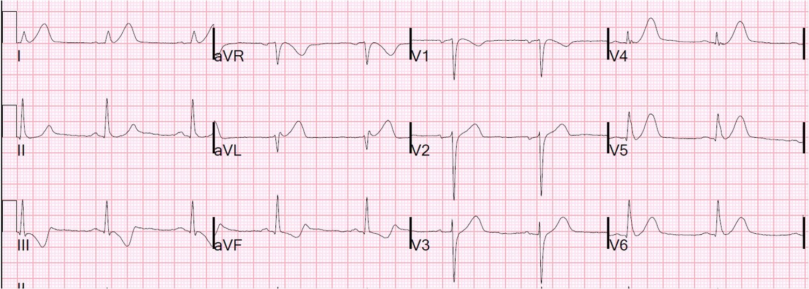
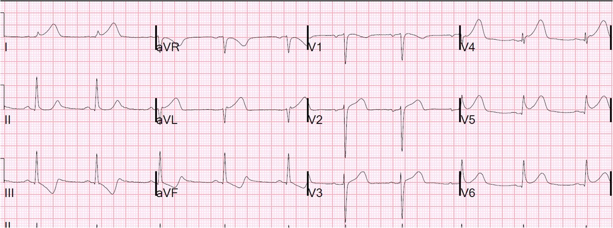
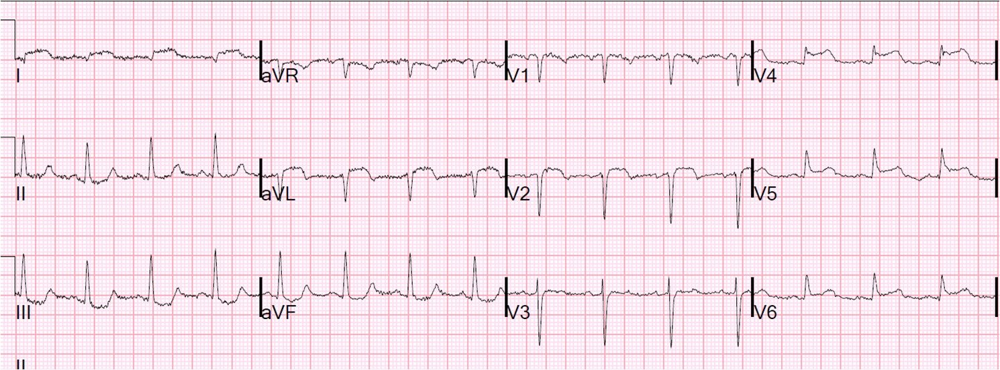
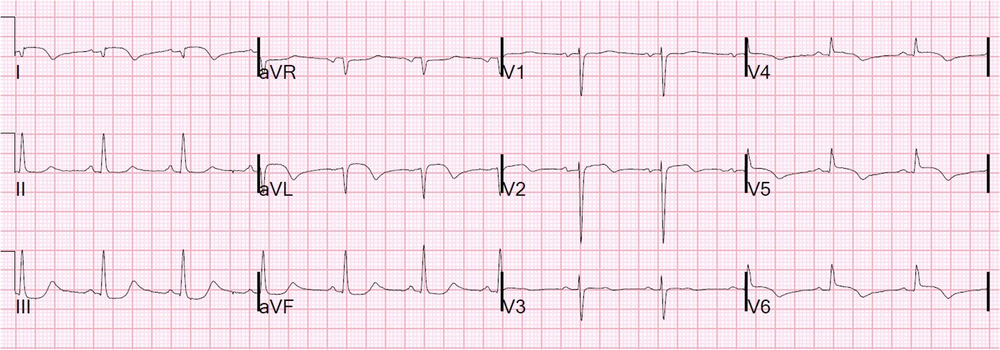

09/08/2014 — Tái tưới máu vi mạch kém (“không tái lưu” – no reflow): chẩn đoán tốt nhất bằng điện tâm đồ
Bản dịch tiếng Việt của bài "Poor Microvascular Reperfusion (“No Reflow”): Best Diagnosed by ECG" – Dr. Smith’s ECG Blog. Giữ nguyên toàn bộ 4 hình ảnh của bản gốc.
Một phụ nữ khoảng 50 tuổi, trước đây khỏe mạnh, không có tiền sử bệnh lý hay yếu tố nguy cơ mạch vành, đến viện 30 phút sau khi đột ngột đau ngực dữ dội sau xương ức. Điện tâm đồ được ghi và đọc trong vòng 13 phút:


Chúng tôi cho clopidogrel 600 mg, aspirin và heparin liều bolus. Còn kịp ghi thêm một điện tâm đồ nữa, 13 phút sau, trước khi chuyển vào phòng thông tim:


Kết quả thông tim
Bệnh nhân được đưa vào phòng thông tim với thời gian từ cửa đến bóng (door-to-balloon) là 50 phút, tổng thời gian từ khởi phát triệu chứng đến bóng là 80 phút (rất nhanh). LAD đoạn gần bị tắc hoàn toàn; sau khi được mở thông, mạch này để lộ ra một nhánh chéo thứ nhất rất lớn (điều này giải thích vì sao V4-V6 chiếm ưu thế trên điện tâm đồ). Sau tái tưới máu, mức “ngấm thuốc” (blush) có phần kém hơn (tức tái tưới máu vi mạch, được thể hiện bằng việc thuốc cản quang làm vùng cơ tim bị ảnh hưởng mờ đục nhẹ).
Lúc này đã có dòng chảy TIMI-3, và bệnh nhân hết đau, nhưng ST vẫn chênh lên dai dẳng ở chuyển đạo V5 trên monitor 6 chuyển đạo trong phòng thông tim. Vì vậy, ngoài việc lấy huyết khối, bác sĩ can thiệp đã bơm adenosine (một thuốc giãn mạch) trong mạch vành để cố cải thiện dòng chảy vi mạch phía xa. Như thường quy, ông cũng bơm nitroglycerin trong mạch vành. Và dĩ nhiên, ông dùng eptifibatide liều bolus rồi truyền liên tục để ức chế tiểu cầu tối đa. Ông không thấy mạch máu nào bị “cắt cụt” ở phía xa trong vùng phân bố của nhánh chéo lớn hay của LAD, nhưng dựa vào ST chênh lên dai dẳng, ông nghi ngờ bệnh nhân đã bị một trận “mưa” mảnh vụn đáng kể trôi xuống vùng phân bố của nhánh chéo. Ông cho biết “điều này có lẽ đã xảy ra vào lúc mạch bị tắc cấp, vì chúng tôi không gặp vấn đề “không có dòng chảy” (no flow) hay “dòng chảy chậm” (slow flow) nào xuất hiện cấp tính trong suốt thủ thuật.”
Đây là điện tâm đồ sau thông tim:


Có ST chênh lên dai dẳng, và sóng T vẫn dương dai dẳng (không có sóng T tái tưới máu) ở V4-V6. Dù sóng T đảo ngược ở aVL, chúng không đảo ngược ở chuyển đạo I, và ST vẫn chênh lên dai dẳng ở aVL.
Sau thông tim, troponin I đã là 107 ng/mL tại thời điểm 5 giờ sau khi đến viện, và đạt đỉnh 178 ng/mL (nhồi máu cơ tim rất rộng).
Bệnh nhân có phân suất tống máu sau thông tim là 36% và đau ngực dai dẳng gần như suốt cả ngày. Do nguy cơ cao bị sốc tim và rối loạn nhịp, việc nhập ICU là cần thiết (thường không cần khi tái tưới máu thành công hoàn toàn).
Thông thường, phân suất tống máu thấp ở một bệnh nhân được khôi phục nhanh dòng chảy TIMI-3 có nghĩa là bệnh nhân có cơ tim bị choáng (stunned myocardium) và vùng cơ tim này sẽ hồi phục. Tuy nhiên, ở đây việc ST chênh lên không hồi phục phù hợp với tái tưới máu vi mạch kém, cũng như troponin I rất cao, và do đó chức năng nhiều khả năng sẽ không hồi phục tốt.
Cuối cùng cơn đau cũng hết, nhưng tổn thương đáng kể đã xảy ra. Chẳng hạn, nguy cơ đột tử do rối loạn nhịp cao hơn nhiều so với khi tái tưới máu vi mạch tốt, và bệnh nhân có thể phải ra viện với một máy khử rung tự động bên ngoài tạm thời.
2 ngày sau khi đến viện, đây là điện tâm đồ:


Không tái lưu (No Reflow)
Bệnh nhân này có thời gian từ khởi phát triệu chứng đến bóng nhanh đáng kể, được điều trị tái tưới máu tối ưu, vậy mà vẫn không được tái tưới máu tốt vì tái tưới máu vi mạch kém (được cho là chủ yếu do tắc nghẽn vi mạch ở phía hạ lưu và/hoặc co mạch). Khoảng 2-5% bệnh nhân được PCI thành công bị hiện tượng không tái lưu (no-reflow). Việc ST chênh lên không hồi phục trên điện tâm đồ là chỉ điểm tốt nhất của hiện tượng không tái lưu. Chỉ cần nói rằng những bệnh nhân này có kết cục xấu hơn nhiều so với bệnh nhân có tái tưới máu vi mạch tốt. Nguyên nhân của hiện tượng này không giống nhau ở mọi bệnh nhân. Bên cạnh các yếu tố khác, nó có liên quan với tình trạng kháng clopidogrel. (Chúng ta thường nghĩ tới việc dùng prasugrel hoặc ticagrelor để phòng tắc lại; có lẽ chúng ta nên dùng các thuốc thay thế clopidogrel này để phòng “không tái lưu.” Điều trị “không tái lưu” dựa vào các thuốc giãn mạch như adenosine, verapamil và nitroprusside, cũng như liệu pháp ba thuốc kháng tiểu cầu; chưa có một biện pháp cơ học hay dược lý đơn lẻ nào được chứng minh là hiệu quả một cách nhất quán.
Đây là một bài tổng quan năm 2010.
Đây là một bài tổng quan khác năm 2012.
Tái tưới máu trên điện tâm đồ: Tóm tắt
Tôi xin để phần chi tiết cho chương sách của tôi ở bên dưới.
1. Điện tâm đồ là yếu tố tiên đoán tốt nhất tình trạng tái tưới máu của hệ vi mạch, thậm chí tốt hơn cả đánh giá trên chụp mạch bằng dòng chảy TIMI. Hãy để ý rằng bác sĩ can thiệp đã dựa vào điện tâm đồ để chẩn đoán “không tái lưu” ở bệnh nhân này.
2. Phân độ tưới máu cơ tim TIMI (TIMI myocardial perfusion grading, TMP) từ 1-3 phân độ mức tái tưới máu vi mạch thấy trên phim chụp mạch, gọi là mức “ngấm thuốc” (blush). Tình trạng không có tưới máu vi mạch trong khi dòng máu ở động mạch thượng tâm mạc tốt được gọi là “không tái lưu” (no reflow).
3. “Không tái lưu” có lẽ chủ yếu do “mưa” thuyên tắc gồm các khối kết tập tiểu cầu trôi xuống phía hạ lưu, và cũng do co mạch.
4. Sau tái tưới máu, dấu ấn điện tâm đồ đầu tiên của tái tưới máu vi mạch là sóng T đảo ngược
5. Sau tái tưới máu, dấu ấn điện tâm đồ tốt nhất của tái tưới máu vi mạch là ST chênh lên hồi phục ít nhất 50% so với mức tối đa, và tốt hơn nữa là hồi phục > 70% (hoặc hồi phục hoàn toàn).
6. Điện tâm đồ đáng tin cậy hơn nhiều so với việc hết đau ngực trong đánh giá tái tưới máu vi mạch.
Điện tâm đồ trong TÁI TƯỚI MÁU VÀ TẮC LẠI
Đây là Chương 27 (Tái tưới máu và tắc lại) trong cuốn sách của tôi, The ECG in Acute MI. Chương này dài, và có một thư mục có chú giải chi tiết. Nội dung dựa trên y văn trước năm 2002, nhưng vẫn chính xác và bao gồm gần như mọi điều bạn cần biết (trừ khi bạn là bác sĩ can thiệp) về điện tâm đồ trong tái tưới máu và tắc lại.
Chương 27:
BỐI CẢNH CHUNG
Sự thông thoáng của động mạch vàtuần hoàn vi mạch
Điều trị tái tưới máu được định hướng bằng việc đánh giá liên tục
tình trạng tái tưới máu cơ tim.
Điều này phụ thuộc vào hai yếu tố: 1) tái tưới máu
động mạch thượng tâm mạc liên quan đến nhồi máu
(IRA); và 2) tái tưới máu tuần hoàn vi mạch, vốn có thể bị tổn thương do thiếu máu cục bộ và
tái tưới máu (hiện tượng “không tái lưu” – no-reflow) và dẫn tới cản trở dòng chảy
mao mạch.
Tình trạng huyết động và tuổi là các chỉ điểm tiên lượng lâm sàng
tốt nhất đối với kết cục của nhồi máu cơ tim cấp (AMI).
Chỉ điểm điện tâm đồ tốt nhất đối với kết cục của AMI là hồi phục đoạn ST hoặc
việc không hồi phục (318-322). Yếu tố tiên đoán
tổng thể tốt nhất của tái tưới máu cơ tim thất bại là phát hiện đoạn ST hồi phục < 50% so với
mức chênh lên tối đa. Tuy nhiên, điện tâm đồ
không thể xác định nguyên nhân tái tưới máu thất bại là do động mạch vẫn tắc dai dẳng
hay do tổn thương vi mạch. Cần chụp mạch để đánh giá và
phân độ sự thông thoáng của IRA và tuần hoàn vi mạch, cũng như để định hướng điều trị
tiếp theo. PCI cứu vãn, mà chúng tôi định nghĩa là PCI được thực hiện trong vòng 6 giờ kể từ
khi bắt đầu điều trị tiêu sợi huyết, (323) cần được cân nhắc mạnh mẽ khi
bác sĩ lâm sàng đã xác định tái tưới máu bằng tiêu sợi huyết thất bại, và cần được thực hiện ngay sau khi chuyển tới cơ sở có PCI nếu không có bằng chứng điện tâm đồ của tái tưới máu tốt (324). Điều này
đặc biệt đúng với AMI diện rộng, thể hiện qua vị trí thành trước,
ST chênh lên cao, hoặc ST lệch khỏi đường nền ở nhiều chuyển đạo. Một IRA đã thông nhưng dòng chảy không đủ có thể là do
mức hẹp tồn lưu hoặc tuần hoàn vi mạch bất thường, và có thể được điều trị
bằng thuốc giãn mạch, thuốc kháng tiểu cầu
và thuốc chống huyết khối +/- PCI.
Phân độ TIMI về sự thông thoángcủa IRA
Sự thông thoáng của IRA chỉ có thể được đánh giá chắc chắn bằng
chụp mạch. Các đánh giá trên chụp mạch
sau đó được hệ thống hóa bằng phân độ TIMI, như sau (325):
· TIMI-0 = không có dòng chảy
· TIMI-1 = thuốc cản quang đi qua chỗ tắc
nhưng không tưới máu. Những
bệnh nhân này có ST chênh lên dai dẳng, tiên lượng xấu và cần được
nhận diện để làm PCI cứu vãn
· TIMI-2 = tái tưới máu
một phần. Những bệnh nhân này có thể có hồi phục ST chênh lên và tiên lượng
ở mức trung gian giữa dòng chảy TIMI 0/1 và TIMI 3.
· TIMI-3 = tái tưới máu
hoàn toàn. Những bệnh nhân này thường (nhưng
không phải luôn luôn) có hồi phục đoạn ST. Dòng chảy TIMI-3
sau tái tưới máu đi kèm tỷ lệ tử vong thấp hơn và tỷ lệ mắc
suy tim sung huyết (CHF) thấp hơn (326, 327), nhưng giá trị tiên lượng của nó có thể không
độc lập với việc hồi phục ST chênh lên (318).
Xét theo các chỉ số kết cục, phân độ dòng chảy < TIMI-3 cho thấy tái tưới máu thất bại (26, 328). Sau điều trị tái tưới máu cho AMI, dòng chảy TIMI-3
đi kèm tỷ lệ tử vong 30-42 ngày là 3,6%, so với dòng chảy TIMI-2
(tử vong 6,6%) và dòng chảy TIMI-0/1 (tử vong 9,5%) (327).
Số khung hình TIMI (TIMI Frame Count)
Số khung hình TIMI (TFC) giúp hệ thống hóa thêm việc phân loại dòng chảy
TIMI. TFC là số đo
chính xác số khung hình chụp mạch điện ảnh (cineangiography) cần thiết để thuốc cản quang
tới được một đoạn xa đã xác định của IRA (xem phần bàn luận Bối cảnh trong mục
Các mức tái tưới máu trên chụp mạch thuộc
thư mục có chú giải của chương này).
Phân độ tưới máu cơ tim TIMIđối với hệ vi mạch
Dòng chảy TIMI và TFC chịu ảnh hưởng của cả mức độ nặng
của chỗ hẹp và huyết khối bên dưới lẫn của hệ vi mạch. Hệ vi mạch nguyên vẹn được
đánh giá chính xác nhất qua hình ảnh trên phim chụp mạch, trong đó cơ tim được thuốc cản quang làm sáng lên một cách lan tỏa và mờ nhạt,
gọi là “ngấm thuốc cơ tim” (myocardial blush). Các đánh giá này được hệ thống hóa bằng phân độ tưới máu cơ tim TIMI (TMP),
dựa trên thang từ 0-3 như sau (319, 326, 329):
· TMP độ 0 = không có
tưới máu vi mạch
· TMP độ 1 = thuốc cản quang không
được thải
· TMP độ 2 = thuốc cản quang được thải
chậm
· TMP độ 3 = thải thuốc
bình thường.
Một động mạch vành đã thông có thể có dòng chảy TIMI-3 nhanh
nhưng có TMP độ 0 hoặc 1 (326); bệnh nhân có những dấu hiệu này có
ST chênh lên dai dẳng (318, 319, 329).
TMP độ 3 đi kèm
tiên lượng tốt, độc lập với dòng chảy TIMI.
CHẨN ĐOÁN TÁI TƯỚI MÁU BẰNG ĐIỆN TÂM ĐỒ
Đoạn ST trong tái tưới máu
Khi IRA đã được tái tưới máu VÀ vi tuần hoàn còn nguyên vẹn, đoạn ST thường
giảm nhanh và gần về đường nền trong vòng
3 giờ sau tái tưới máu (xem Ca 27-1).
Khoảng 80% trường hợp IRA được tái tưới máu có đoạn ST hồi phục 50%
trong vòng 90 phút. Phần lớn trong số
20% còn lại nhiều khả năng có tổn thương vi mạch dẫn đến dòng chảy mao mạch kém; tiên lượng
của họ cũng xấu như bệnh nhân có dòng chảy kém trong IRA (318, 319, 329).
Điều này trái ngược với IRA không được tái tưới máu, trong đó đoạn ST giảm từ từ rồi đi ngang (plateau),
có hoặc không có chênh lên dai dẳng.
Hiện tượng đi ngang xuất hiện sớm nhất từ 6 đến 12 giờ, do tế bào cơ tim
chết (330).
Hồi phục đoạn ST là một yếu tố tiên đoán
chính xác của tái tưới máu, đặc biệt ở những bệnh nhân có điện tâm đồ cho thấy ST chênh lên > 4 mm
(331). Trong lúc hoặc ngay trước khi tái tưới máu, đoạn ST thường tiếp tục tăng lên
trước khi hồi phục, thường kèm đau ngực tăng lên (156, 157, 332, 333, 334). Một số bệnh nhân trải qua “tái tưới máu theo chu kỳ” (cyclic reperfusion), trong đó có
tái tưới máu rồi sau đó tắc lại.
Hiện tượng này có thể xảy ra dù có hay không có điều trị.
Tái tưới máu theo chu kỳ xảy ra ở 25-30% các trường hợp AMI trước khi điều trị tái tưới máu
và có thể được phát hiện bằng theo dõi đoạn ST (335).
Sóng T trong tái tưới máu
Trong AMI đã được tái tưới máu, sóng T đảo ngược
phần cuối thường xuất hiện nhanh
(trong vòng 90 phút) ở các chuyển đạo có ST chênh lên nhiều nhất lúc
đến viện, và trước khi đoạn ST hồi phục hoàn toàn (156, 157). Điều này trái ngược với AMI không được tái tưới máu, với 90% số ca có sóng T đảo ngược từ từ (trong 48 đến 72
giờ), độ sâu < 3 mm (94)
(Hình 8-3). Nếu có một mức tổn thương cơ tim nào đó,
được đo bằng troponin tăng, có thể dự đoán sóng T đảo ngược phần cuối sẽ tiến triển
thành sóng T đảo ngược sâu và đối xứng trong 48 giờ đầu sau khi
khởi phát AMI (94) (xem Ca 27-2). Theo đó, sóng T đảo ngược sớm (< 24 giờ) đi
kèm IRA thông tốt hơn, phân độ tưới máu tốt hơn và diễn biến
tại bệnh viện lành tính hơn so với đảo ngược muộn hơn (336). Ở một số bệnh nhân được
tái tưới máu rất sớm và có rất ít hoặc không có tế bào cơ tim chết, khi đo
bằng troponin, có thể không có sóng T đảo ngược, đảo ngược rất muộn, hoặc
đảo ngược có hồi phục (94).
Các thay đổi sóng Q và
sóng R không phải là dấu ấn chính xác của tái tưới máu trong AMI (337).
Theo dõi tái tưới máu
Theo dõi tái tưới máu có thể
bao gồm quan sát 5 yếu tố như sau: 1) hồi phục đoạn ST, hay
“phục hồi” (recovery); 2) sóng T đảo ngược phần cuối; 3) hết đau ngực; 4) rối loạn nhịp do
tái tưới máu; và 5) các dấu ấn sinh hóa.
1. Hồi phục
đoạn ST
Hồi phục đoạn ST, hay “phục hồi” (recovery), là dấu ấn
tốt nhất của tái tưới máu (xem Ca 27-1 và 27-2). Đoạn
ST có thể được theo dõi liên tục hoặc bằng các điện tâm đồ tĩnh (ghi từng lần) mỗi 5 phút
kể từ lúc dùng thuốc tiêu sợi huyết.
Nếu ST chênh lên > 4 mm mà
KHÔNG có hồi phục >/= 50% tại
phút thứ 60 CŨNG KHÔNG có sóng T đảo ngược phần cuối, thì ít khả năng có dòng chảy TIMI-3. Hãy cân nhắc mạnh mẽ PCI cứu vãn.
Theo dõi đoạn ST liên tục là phương pháp tốt nhất
để theo dõi các thay đổi đoạn ST (156, 159, 338, 339) (xem Ca
27-3). Đã có các sản phẩm thương mại
trên thị trường. Chọn một chuyển đạo có
ST chênh lên nhiều nhất, vẽ đồ thị liên tục mức ST chênh lên, và quan sát
các đỉnh và đáy. Theo quy ước, ST chênh lên được đo trên các monitor liên tục tại thời điểm 80 ms sau
điểm J. Xem Bảng 27-1.
· Đoạn ST hồi phục >/= 50% so với mức ST chênh lên TỐI ĐA
(mức đỉnh đạt được) trong vòng 60 phút và không chênh lên trở lại là một yếu tố tiên đoán
rất tốt của tái tưới máu. Những bệnh nhân này không cần chụp mạch sớm hay
PCI cứu vãn. Hồi phục ST >/= 50% có giá trị tiên đoán dương (PPV) đối với sự thông thoáng (dòng chảy TIMI-2 hoặc -3)
là 87%.
· Hồi phục ST < 50%, cân nhắc PCI cứu vãn. Giá trị tiên đoán âm (NPV) đối với
tắc mạch (không hồi phục) là 71%; nghĩa là 71 % bệnh nhân không có hồi phục ST
>/= 50% có động mạch bị tắc và 29% có dòng chảy TIMI 2-3. Những bệnh nhân này là đối tượng của
PCI cứu vãn. Quan trọng nhất, hồi phục
ST < 50% mà không có sóng T đảo ngược phần cuối cho thấy dòng chảy TIMI
0-2 với PPV là 86%. Dòng chảy TIMI-3
mới là tái tưới máu thành công thực sự. Trong số
bệnh nhân có ST chênh lên dai dẳng (hồi phục < 50%), 14% có dòng chảy TIMI-3
nhưng có lẽ vẫn còn ST chênh lên do tổn thương vi mạch.
· ST chênh lên tối đa hoặc
ban đầu càng cao thì việc tiên đoán sự thông thoáng càng chính xác (331).
Mặc dù các điện tâm đồ tĩnh kém hơn so với
theo dõi đoạn ST liên tục (339), nếu không có sẵn theo dõi liên tục,
thì ghi điện tâm đồ tĩnh mỗi 5 phút kể từ lúc
dùng thuốc tiêu sợi huyết là một biện pháp thay thế hợp lý (158). Dùng một chuyển đạo duy nhất có ST
chênh lên cao nhất và đo mức hồi phục so với độ cao tối đa. Hồi phục ST > 50% tại thời điểm 60 phút sau
điều trị là chỉ điểm tốt của tái tưới máu (158). Hồi phục ST hoàn toàn bảo đảm có tái tưới máu
nhưng hiếm khi đạt được trước phút thứ 60 sau điều trị (339).
2. Sóng T đảo ngược phần cuối
(Xem
thêm Chương 8)
Sóng T đảo ngược phần cuối trong vòng 90
phút đầu là
một dấu ấn đặc hiệu của tái tưới máu và có độ nhạy khoảng 60% (156,
157, 158). Nếu các chuyển đạo có ST
chênh lên xuất hiện sóng T đảo ngược phần cuối trong vòng 60 phút sau tiêu sợi huyết,
nhiều khả năng đã có tái tưới máu. Vì sóng T đảo ngược thường cho thấy đã có một mức
tổn thương cơ tim nào đó, nên đoạn ST hồi phục nhanh mà không có bất kỳ sóng T đảo ngược nào có thể là
bằng chứng cho thấy tái tưới máu đã xảy ra trước khi tế bào cơ tim chết; trong những trường hợp này,
các dấu ấn sinh học có thể không tăng. Sóng T đảo ngược
phần cuối thường xuất hiện trước khi đoạn ST hồi phục hoàn toàn.
Sóng T đảo ngược sâu,
đối xứng (> 3 mm) cho thấy tình trạng tái tưới máu đã xảy ra lâu
hơn so với tái tưới máu được chỉ điểm bằng sóng T đảo ngược phần cuối (xem Ca 27-2). Sóng T đảo ngược phần cuối tiếp tục
tiến triển thành sóng T đảo ngược đối xứng (94). Sóng T đảo ngược sâu, đối xứng không nhất thiết
phải có ST chênh lên đi trước, mặc dù thường không hình thành sóng Q
nếu không có ST chênh lên. Sóng T
đảo ngược đối xứng nói chung có mặt sau khi đoạn ST đã hồi phục hoàn toàn.
Sóng T cuối cùng cũng
đảo ngược ở các mạch máu bị tắc dai dẳng. Sóng T đảo ngược khi có sóng Q
sâu, đặc biệt là sóng QS, có thể là
biểu hiện của tái tưới máu muộn trong diễn tiến AMI hoặc của một AMI đã hình thành rõ,
không được tái tưới máu (94, 340).
Các sóng T đảo ngược này thường < 3 mm, trái với sóng T đảo ngược
của AMI đã được tái tưới máu, vốn > 3 mm (94). Sóng T đảo ngược như vậy có thể thấy ngay lúc
đến viện nếu bệnh nhân đến muộn sau khởi phát (xem Ca 33-3).
Với AMI
thành sau, nếu sóng T dương trước tái tưới máu và có hồi phục ST,
tái tưới máu thường làm sóng T ở các chuyển đạo trước tim (đặc biệt V2) trở nên
dương hoàn toàn, cao hơn và rộng hơn so với trước khi khởi phát AMI. Đây là hình ảnh soi gương của các sóng T đảo ngược
ở thành sau. Tắc lại trong trường hợp
này ít khả năng gây sóng T đảo ngược.
Nếu sóng T đảo ngược không đối xứng trước tái tưới máu, tái tưới máu
thường làm sóng T giả bình thường hóa
(chuyển thành dương) và trở nên cao hơn, rộng hơn so với trước khi khởi phát AMI;
tắc lại nói chung làm sóng T đảo ngược trở lại. Xem Ca 27-1. (Xem thêm: Ca 16-10 và 13-4).
3. Hết đau ngực
Hai nghiên cứu cho thấy hết đau ngực hoàn toàn, thường kèm theo đau tăng thoáng qua
lúc đầu, có PPV tốt, với khả năng
tái tưới máu từ 84% (339) đến 96% (156). Tuy nhiên, hết đau ngực mà
không có bất kỳ sự hồi phục đoạn ST nào cũng như không có sóng T đảo ngược phần cuối thì ít khả năng
phản ánh tái tưới máu. Nếu hết đau ngực,
hãy ghi các điện tâm đồ liên tiếp; tiến hành nong mạch cứu vãn nếu không có bằng chứng điện tâm đồ của
tái tưới máu.
Khi tự hết đau ngực, đừng ngừng điều trị tái tưới máu
trừ khi có kèm theo một mức hồi phục ST nào đó:
·
Nếu ST chênh lên tăng, không đổi, hoặc hồi phục < 25%, hãy tiếp tục
điều trị tái tưới máu.
·
Nếu hồi phục 25%-50%, hoặc có sóng T đảo ngược phần cuối, hãy ghi các
điện tâm đồ liên tiếp hoặc theo dõi liên tục và tìm mức hồi phục ST >/= 50%.
· Nếu hồi phục 50%-100%,
có thể tạm ngừng điều trị tái tưới máu trong khi chờ đánh giá thêm, đặc biệt là
theo dõi ST liên tục.
Hết đau ngực có NPV kém, ở chỗ đau dai dẳng
không nhất thiết có nghĩa là tắc dai dẳng (159, 339).
4. Rối loạn nhịp do tái tưới máu
Sự xuất hiện sớm của nhịp tự thất gia tốc (AIVR) cho thấy
tái tưới máu với độ đặc hiệu 97% nhưng độ nhạy chỉ 45% (335). Một loạt nhịp nhanh thất xuất hiện đột ngột cũng có thể
chỉ điểm tái tưới máu.
5. Các dấu ấn sinh hóa của tái tưới máu
Các dấu ấn sinh hóa cũng có thể hữu ích trong đánh giá tái tưới máu; xem
Chương 29 để biết chi tiết.
Xem các Ca 27-1 đến 27-3 để có ví dụ về
tái tưới máu. (Xem thêm: Ca 6-4, 12-3,
16-10, 20-11 và 32-1).
.
Xử trí
Một
phân tích gộp các thử nghiệm ngẫu nhiên cho thấy nong mạch cứu vãn được thực hiện ở
bệnh nhân tái tưới máu thất bại làm giảm tỷ lệ suy tim sung huyết,
tử vong và nhồi máu cơ tim tái phát, mà không có tác dụng bất lợi đáng kể (324). Các thử nghiệm này được thực hiện không có
công nghệ mới nhất và với khoảng thời gian kéo dài từ lúc tiêu sợi huyết đến lúc
can thiệp cứu vãn. Trong thời đại của abciximab và
đặt stent, chúng tôi rất khuyến cáo PCI
cứu vãn nhanh chóng khi tái tưới máu thất bại như được chứng minh bằng các chỉ điểm điện tâm đồ
nêu trên hoặc bằng tình trạng lâm sàng không ổn định dai dẳng. Nếu
có dòng chảy TIMI-3 nhưng phân độ TMP thấp, điều trị bằng thuốc giãn mạch,
thuốc kháng tiểu cầu và thuốc chống huyết khối đặc biệt quan trọng.
TẮC LẠI
Một khi đã đạt được tái tưới máu, hãy theo dõi đoạn ST
để phát hiện tắc lại. Triệu chứng không
phải là chỉ điểm đáng tin cậy của tắc lại và nhiều trường hợp AMI tái phát không có triệu chứng
(69, 89). Nếu không có sẵn theo dõi
liên tục, hãy ghi
điện tâm đồ tĩnh thường xuyên mỗi 30 đến 60 phút cho tới khi chắc chắn đã ổn định. Tối thiểu, hãy ghi điện tâm đồ mỗi giờ trong vài
giờ sau tái tưới máu.
Biểu hiện điện tâm đồ của tắc lại
Mỗi AMI có một “dấu vân tay thiếu máu cục bộ” (ischemic fingerprint), nghĩa là
tắc lại cùng một mạch máu tại cùng vị trí sẽ tái tạo các dấu hiệu điện tâm đồ giống hệt
(83, 190). Do đó,
tắc lại biểu hiện trên điện tâm đồ ngược với tái tưới máu, như sau:
· Ban đầu sóng T nhanh chóng “giả bình thường hóa”, trong đó sóng T đảo ngược chuyển thành dương.
· Sau đó đoạn ST chênh lên trở lại.
Thận trọng: viêm màng ngoài tim khu trú sau nhồi máu
(PIRP) có thể giống tắc lại (xem Chương 28) (94). Bệnh cảnh này đặc trưng bởi sự giả bình thường hóa từ từ của
sóng T hoặc sóng T dương dai dẳng ở các chuyển đạo có ST
chênh lên nhiều nhất lúc nhập viện. Cũng có
ST chênh lên trở lại từ từ, trong 24-72 giờ. PIRP không có hình ảnh ST chênh lên lan tỏa điển hình
của viêm màng ngoài tim không đặc hiệu.
Xem Ca 27-3 về tắc lại. (Xem thêm: Ca 8-12, về giả bình thường hóa
sóng T đảo ngược đối xứng; Ca
13-4 về nhồi máu cơ tim cấp (AMI) dưới-sau có tái tưới máu và tắc lại; và Ca 3-3
về tắc lại một tuần sau tái tưới máu).
Xử trí
Tắc lại sau tiêu sợi huyết đòi hỏi hoặc
tiêu sợi huyết lại, hoặc tốt hơn là chụp mạch vành cứu vãn +/- PCI.
THƯ MỤC CÓ CHÚ GIẢI
Tái tưới máu: Bối cảnh chung
Krucoff MW và cs., Continuously
updated 12-lead ST-segment recovery analysis for myocardial infarct artery
patency assessment and its correlation with multiple simultaneous early
angiographic observations, 1993 (Phân tích hồi phục đoạn ST trên điện tâm đồ đủ chuyển đạo cập nhật liên tục để đánh giá độ thông của động mạch gây nhồi máu và tương quan với nhiều quan sát chụp mạch sớm đồng thời).
Phương pháp: Krucoff và cs.
(341) đã chụp mạch vành và theo dõi đoạn ST liên tục ở 22 bệnh nhân
AMI.
Kết quả: Bốn mươi bốn
đợt động mạch thông và nhiều lần chuyển đổi xu hướng ST ở 11 trong 22 bệnh nhân
sau tiêu sợi huyết gợi ý những thay đổi có tính chu kỳ của dòng chảy mạch vành trước khi
thông tim.
Bình luận: Các tác giả này và những người khác (158, 159) đã nhiều lần chứng minh rằng phải đo mức hồi phục ST
tính từ mức ST chênh lên tối đa thì mới đánh giá chính xác được tình trạng tái tưới máu. Đỉnh ST chênh lên có thể xảy ra khi không
điều trị tiêu sợi huyết hoặc vào bất kỳ thời điểm nào sau điều trị tiêu sợi huyết.
Điện tâm đồ tĩnh kém hiệu quả hơn theo dõi liên tục vì đoạn ST
có thể tăng lên từ mức nền trước khi tái tưới máu thực sự rồi lại giảm xuống (hoặc
ngược lại) về gần cùng mức đó mà không bị phát hiện.
Các mức tái tưới máu trên chụp mạch, ST chênh lên dai dẳng và tiên lượng
Bối cảnh: Mức dòng chảy TIMI là thước đo
tái tưới máu của một mạch vành, còn mức tưới máu cơ tim TIMI (TMP) là thước đo
tưới máu vi mạch cơ tim. Số khung hình TIMI (TFC)
là số đo chính xác số khung hình chụp mạch (cine) cần thiết
để thuốc cản quang tới một đoạn xa xác định của động mạch liên quan đến nhồi máu (IRA). TFC đặc biệt
hữu ích để phân loại sâu hơn dòng chảy TIMI-2 và TIMI-3. TFC trung bình bình thường là: 36,2 +/- 2,6 đối với
LAD, 20,4 +/- 3,0 đối với RCA, và 22,2 +/- 4,1 đối với động mạch mũ
(342). Để chuẩn hóa TFC cho mọi
động mạch, TFC của LAD được chia cho 1,7 để có TFC “hiệu chỉnh” (CTFC)
(342). Lúc 90 phút sau tiêu sợi huyết
điều trị STEMI ở mọi vị trí, CTFC 0-13 là dòng máu trên mức bình thường và
đi kèm tỷ lệ tử vong 0%. CTFC
14-40 đi kèm tỷ lệ tử vong 2,7%, và CTFC > 40 đi kèm
tỷ lệ tử vong 6,4% (343). Trong số
bệnh nhân có dòng chảy TIMI-3, CTFC </= 20 so với > 20 đi kèm
tỷ lệ biến chứng lần lượt là 7,9% so với 15,5% (343).
Van’t Hof và cs., Clinical value of 12-lead electrocardiogram after
successful reperfusion therapy for acute myocardial infarction, 1998 (Giá trị lâm sàng của điện tâm đồ đủ chuyển đạo sau điều trị tái tưới máu thành công nhồi máu cơ tim cấp).
Phương pháp: Van ‘t Hof và cs. (320) đã nghiên cứu sự hồi phục ST
ở 403 bệnh nhân AMI có dòng chảy TIMI-3 sau nong bóng tiên phát.
Kết quả: Đoạn ST trở về bình thường ở 51% bệnh nhân (ST
< 0,1 mV). Trở về bình thường một phần
(30-70% chiều cao ban đầu) đi kèm nguy cơ tương đối (RR) tử vong là
3,6 (KTC = 1,6-8,3) so với trở về
bình thường hoàn toàn (< 30% chiều cao ban đầu).
Không hồi phục hoặc ST chênh lên tăng thêm đi kèm RR
tử vong là 8,7 (khoảng = 3,7-20,1).
Van’t Hof và cs., Angiographic assessment of myocardial reperfusion in
patients treated with primary angioplasty for acute myocardial infarction:
myocardial blush grade, 1998 (Đánh giá tái tưới máu cơ tim trên chụp mạch ở bệnh nhân nhồi máu cơ tim cấp được nong bóng tiên phát: mức ngấm thuốc cơ tim – blush).
Phương pháp: Van ‘t Hof và cs. (329) đã nghiên cứu mức ngấm thuốc cơ tim (blush)
trong khi nong bóng tiên phát ở 777 bệnh nhân AMI.
Kết quả: Nong bóng đạt dòng chảy TIMI-3 ở 89%
bệnh nhân và dòng chảy TIMI-0, -1 hoặc -2 ở 11%.
Bệnh nhân có mức TMP 3, 2 và 0/1 lần lượt có: 1) kích thước ổ nhồi máu theo CK là 757 IU/L, 1143 IU/L
và 1623 IU/L; 2) phân suất tống máu (EF) là 50%, 46% và 39%; và 3) tỷ lệ tử vong (sau thời gian theo dõi
trung bình 1,9 +/- 1,7 năm) là 3%, 6% và 23%. Mức TMP dự báo tử vong độc lập
với Killip độ, mức dòng chảy TIMI, EF và các biến số lâm sàng khác. Mức TMP là yếu tố dự báo tốt nhất tỷ lệ tử vong 3
năm, với tỷ lệ lần lượt là 3%, 15% và 37% ở bệnh nhân có mức 3 (19%
bệnh nhân), 2 và 0/1.
Trong số bệnh nhân có mức TMP 3, ST chênh lên trở về bình thường ở 65% và ST
chênh lên giảm ở thêm 28%.
Gibson CM và cs., Relationship of TIMI myocardial
perfusion grade to mortality after administration of thrombolytic drugs, 2000 (Mối liên quan giữa mức tưới máu cơ tim TIMI và tử vong sau dùng thuốc tiêu sợi huyết).
Phương pháp: Gibson và cs. (326) đã nghiên cứu 762 bệnh nhân trong
thử nghiệm TIMI-10B, trong đó 854 bệnh nhân AMI được phân ngẫu nhiên dùng TNK-tPA
hoặc alteplase chuẩn và được chụp mạch vành lúc 90 phút sau khi dùng thuốc tiêu sợi
huyết.
Kết quả: Tưới máu cơ tim mức TMP 3 đi kèm
một cách độc lập với tỷ lệ tử vong 30 ngày thấp 2,0%, so với 3,5%
ở bệnh nhân có dòng chảy TIMI-3. Mức
giảm nguy cơ này cộng thêm vào nguy cơ thấp của dòng chảy TIMI-3, đến mức tỷ lệ tử vong
chỉ còn 0,73% (1 trên 137) ở bệnh nhân có dòng chảy TIMI-3 và tưới máu mức TMP
3, so với tỷ lệ tử vong 10,9% (14 trên 129) ở những bệnh nhân có cả dòng chảy TIMI
0-2 và tưới máu xếp mức TMP 0/1
theo phân loại. Tỷ lệ tử vong xấp xỉ
như nhau ở các bệnh nhân có: (1) cả dòng chảy TIMI 0-2 và tưới máu mức TMP 3,
có lẽ nhờ tuần hoàn bàng hệ; và (2) cả dòng chảy TIMI-3 và tưới máu mức TMP 0/1.
Hồi phục ST và tiên lượng
Hồi phục
ST có thể là một chỉ dấu tiên lượng tốt, ngay cả khi có một
mạch máu bị tắc. Không hồi phục ST
báo hiệu tiên lượng xấu, ngay cả khi động mạch đã thông.
Claeys MJ, Determinants and prognostic
implications of persistent ST-segment elevation after primary angioplasty for
acute myocardial infarction: importance of microvascular reperfusion injury on
clinical outcome, 1999 (Các yếu tố quyết định và ý nghĩa tiên lượng của ST chênh lên dai dẳng sau nong bóng tiên phát trong nhồi máu cơ tim cấp: tầm quan trọng của tổn thương tái tưới máu vi mạch đối với kết cục lâm sàng).
Phương pháp:
Claeys và cs. (319) đã nghiên cứu 91 bệnh nhân AMI được tái tưới máu sau
nong bóng.
Kết quả:
Trong 91 bệnh nhân, 75 có dòng chảy TIMI-3 và 16 có dòng chảy TIMI-2. ST chênh lên dai dẳng, định nghĩa là ST >/=
50% chiều cao ban đầu, gặp ở 33 (36%) bệnh nhân và đi kèm
tỷ lệ tử vong một năm cao (15% so với 2%) và tỷ lệ biến cố tim mạch bất lợi
chính tổng cộng cao (45% so với 15%). ST chênh lên dai dẳng là yếu tố quyết định độc lập
quan trọng nhất của tỷ lệ biến cố tim mạch bất lợi chính, với
RR hiệu chỉnh là 3,4, và cả hai đều được quy cho tình trạng tuần hoàn
vi mạch bị suy giảm.
Shah A và cs.,
Prognostic implications of TIMI flow grade
in the infarct related artery compared with continuous 12-lead ST-segment
resolution analysis. Reexamining the
“gold standard” for myocardial reperfusion treatment, 2000 (Ý nghĩa tiên lượng của mức dòng chảy TIMI ở động mạch liên quan đến nhồi máu so với phân tích hồi phục đoạn ST liên tục trên đủ chuyển đạo. Xem xét lại “tiêu chuẩn vàng” của điều trị tái tưới máu cơ tim).
Phương pháp: Shah và cs. (318) đã xác định 258 bệnh nhân AMI được
tiêu sợi huyết rồi chụp mạch vành trong các thử nghiệm TIMI-7 và GUSTO-1
(xem Phụ lục). Bệnh nhân được phân tầng
theo mức tái tưới máu TIMI 0-3 và theo mức hồi phục ST >/= 50% so với <
50%.
Kết quả: Hồi phục
ST LÀ yếu tố dự báo độc lập cho kết cục lâm sàng gộp gồm
tử vong hoặc suy tim sung huyết (CHF), nhưng mức dòng chảy TIMI thì KHÔNG.
Hồi phục ST ở những bệnh nhân
có dòng chảy TIMI mức 0-1 xác định một nhóm có diễn biến lâm sàng tương đối
lành tính.
Dissman R và cs., Early
assessment of outcome by ST segment analysis after thrombolytic therapy in
acute myocardial infarction, 1994 (Đánh giá sớm kết cục bằng phân tích đoạn ST sau điều trị tiêu sợi huyết trong nhồi máu cơ tim cấp).
Phương pháp: Dissman và cs. (321) đã nghiên cứu nồng độ CK và
EF ở 77 bệnh nhân AMI để đối chiếu mức hồi phục ST với kích thước ổ nhồi máu.
Kết quả: Kích thước ổ nhồi máu xác định bằng men tim và
EF tương ứng tương quan chặt chẽ với mức hồi phục ST hoàn toàn (>70%), một phần (30-70%), hoặc
không hồi phục ST (<30%) lúc 3 giờ sau tiêu sợi huyết. EF ở bệnh nhân hồi phục hoàn toàn, một phần hoặc không hồi phục lần lượt là 58%, 53% và 43%. [người dịch: phần cuối câu này trong bản gốc bị lỗi mã HTML, chỉ còn các từ và số rời rạc; câu được dựng lại theo các từ và số còn sót, thứ tự gán số liệu là suy đoán]
Schroder R và cs., Extent of
early ST segment elevation resolution: a strong predictor of outcome in
patients with acute myocardial infarction and a sensitive measure to compare
thrombolytic regimens, 1995 (Mức độ hồi phục sớm ST chênh lên: yếu tố dự báo mạnh về kết cục ở bệnh nhân nhồi máu cơ tim cấp và là thước đo nhạy để so sánh các phác đồ tiêu sợi huyết).
Phương pháp: Schroder và cs. (322) đã phân tích điện tâm đồ, nồng độ
CK và dữ liệu tử vong của 1909 bệnh nhân AMI được phân ngẫu nhiên dùng reteplase hoặc
streptokinase (SK).
Kết quả: Ở 1398 bệnh nhân đến viện </= 6 giờ
kể từ khi khởi phát AMI, tỷ lệ tử vong 35 ngày đối với hồi phục ST hoàn toàn (>/= 70%), một phần
(30-70 %) hoặc không hồi phục (< 30%) lúc 3 giờ sau dùng thuốc tiêu sợi huyết
lần lượt là 2,5%, 4,3% và 17,5%.
Saran
RK và cs., Reduction in ST segment elevation after thrombolysis predicts either
coronary reperfusion or preservation of left ventricular function, 1990 (Mức giảm ST chênh lên sau tiêu sợi huyết dự báo hoặc tái tưới máu mạch vành, hoặc chức năng thất trái được bảo tồn).
Phương pháp:
Saran và cs. (344) đã nghiên cứu các thay đổi đoạn
ST và dấu hiệu chụp mạch ở 45 bệnh nhân (xem phần chú giải chi tiết hơn
bên dưới).
Kết quả: Chức năng
thất trái được bảo tồn tốt nếu đoạn ST đã giảm >/= 25% lúc 3
giờ.
Theo dõi điện tâm đồ liên tục để dự báo tái tưới máu
Lưu ý: Khi đánh giá các nghiên cứu sau đây, điều quan trọng cần nhớ là
15% số IRA tự thông mà không cần điều trị trong vòng
6-8 giờ sau khi tắc mạch vành (345).
Krucoff MW và cs., Continuous 12-lead ST-segment recovery analysis in the
TAMI 7 study. Performance of a
non-invasive method for real-time detection of failed myocardial reperfusion,
1993 (Phân tích hồi phục đoạn ST liên tục trên đủ chuyển đạo trong nghiên cứu TAMI. Hiệu năng của một phương pháp không xâm lấn để phát hiện theo thời gian thực tình trạng tái tưới máu cơ tim thất bại).
Phương pháp: Krucoff và cs. (159) đã thử nghiệm một phương pháp phân tích hồi phục đoạn ST liên tục trên
12 chuyển đạo trong một nghiên cứu mù, tiến cứu, có đối chiếu
với chụp mạch ở 144 bệnh nhân TAMI-7 được dùng
thuốc tiêu sợi huyết trong giai đoạn sớm của nhồi máu cơ tim. Tổng ST
chênh lên được vẽ theo thời gian bằng phần mềm chạy trên máy tính cá nhân (PC) và được các bác sĩ tim mạch có kinh nghiệm
đọc. Đoạn ST được
vẽ và đánh giá các đỉnh, các đáy và xu hướng chung. Điểm ST tại thời điểm chụp mạch được
so sánh với mức chênh lên đỉnh đã đạt.
Tình trạng thông được dự báo dựa trên sự hồi phục ST, định nghĩa là giảm 50% so với
tổng ST chênh lên tối đa, kèm xu hướng tiếp tục đi xuống. Tình trạng tắc được dự báo khi (1) ST
chênh lên dai dẳng, (2) chênh lên trở lại sau khi đã hồi phục hoặc đã có xu hướng đi xuống, hoặc (3)
ST chênh lên tăng thêm. Nghiên cứu được
coi là không xác định nếu không phân biệt được các đỉnh hoặc đáy rõ ràng và
các xu hướng tương ứng.
Kết quả: Có 144 lần phân tích đoạn ST. Trong 35 lần chụp mạch thực hiện trong các giai đoạn chênh lên (trở lại) rõ ràng
(chỉ điểm tắc), 25 IRA bị
tắc trên chụp mạch. Trong 91
lần chụp mạch thực hiện trong các giai đoạn hồi phục rõ ràng (chỉ điểm tái tưới máu), 81
IRA thông trên chụp mạch. Trong
18 lần phân tích không xác định, 14 thông trên chụp mạch. Nếu nhóm không xác định được coi là
“có lẽ không tắc”, thì IRA thông ở 95 trong 109 trường hợp (87%) được
dự báo như vậy và tắc ở 25 trong 35 trường hợp (71%) được dự báo như vậy. Trong 35 bệnh nhân có phân tích hồi phục ST
xác định IRA là “tắc” (dựa trên ST chênh lên dai dẳng
hoặc tái phát), chỉ 5 người có dòng chảy TIMI-3. Trong
109 bệnh nhân, phân tích xác định “có lẽ không tắc” (“không xác định” hoặc
“thông”) và trong số này 73 có dòng chảy TIMI-3, 22 có dòng chảy TIMI-2, và 14 có
dòng chảy TIMI-0 hoặc 1. Như vậy, “tắc” có giá trị tiên đoán dương (PPV) đối với dòng chảy TIMI 0-2 là
86%, và “có lẽ không tắc” có độ nhạy 94% và PPV 67% đối với
dòng chảy TIMI-3, và PPV 87% đối với dòng chảy TIMI-2 hoặc -3.
Bình luận: Dòng chảy TIMI-3 sau tiêu sợi huyết đi kèm
kết cục tốt hơn nhiều so với ngay cả dòng chảy TIMI-2 (26, 328). Do đó, khả năng phân biệt dòng chảy TIMI-3
với dòng chảy TIMI-0 đến -2 trên điện tâm đồ là quan trọng.
Klootwijk P và cs.,
Non-invasive prediction of reperfusion and coronary artery patency by
continuous ST segment monitoring in the GUSTO-I trial, 1996 (Dự báo không xâm lấn tình trạng tái tưới máu và độ thông động mạch vành bằng theo dõi đoạn ST liên tục trong thử nghiệm GUSTO-I).
Phương pháp: Klootwijk và cs. (331) đã nghiên cứu điện tâm đồ của 373
bệnh nhân GUSTO-1 (xem Phụ lục) bằng phương pháp phân tích
hồi phục đoạn ST liên tục trên 12 chuyển đạo.
Kết quả: Các giá trị dự báo đối với tái tưới máu hoặc
tắc dai dẳng không tốt bằng trong nghiên cứu của Krucoff và cs.
đã mô tả ở trên (159). Các lần chụp mạch được
thực hiện muộn hơn đáng kể (trong khoảng 90-180 phút) trong nghiên cứu này. Do đó, độ chính xác dự báo
được dự kiến sẽ thấp hơn vì đoạn ST ở những vùng nhồi máu dai dẳng
giảm dần theo thời gian do tế bào cơ tim chết. Mức giảm >/= 50% so với đỉnh và không có
chênh lên trở lại dai dẳng trước khi chụp mạch được dùng làm dự báo
“thông”. Độ chính xác rất cao (79-100%) ở bệnh nhân có ST chênh lên nhiều
(> 4 mm). Ở 116 bệnh nhân có ST chênh lên đỉnh
>/= 4 mm, dự báo “thông” có PPV 79% và giá trị tiên đoán âm (NPV)
75%.
Doevendans PA và cs.,
Electrocardiographic diagnosis of reperfusion during thrombolytic therapy in
acute myocardial infarction, 1995 (Chẩn đoán tái tưới máu bằng điện tâm đồ trong khi điều trị tiêu sợi huyết nhồi máu cơ tim cấp).
Phương pháp: Doevendans và cs. (156) đã theo dõi đoạn ST liên tục
ở 61 bệnh nhân AMI trong 60 phút sau điều trị tiêu sợi
huyết.
Kết quả: Tái tưới máu
đi kèm hồi phục ST nhanh, thường sau một đợt chênh lên thoáng qua. Trong 44 bệnh nhân có tái tưới máu, 42 người có
mức giảm ST chênh lên >/= 25% so với chiều cao tối đa (độ nhạy 95%), nhưng
chỉ một trong 17 bệnh nhân không tái tưới máu có mức trở về bình thường như vậy
(độ đặc hiệu 94%). Khi dùng mức giảm 50%
ST chênh lên làm điểm cắt, độ nhạy là 85% (38 trong 44 bệnh nhân) và
độ đặc hiệu vẫn là 94%. Hết đau ngực cũng là một dấu hiệu rất nhạy
của tái tưới máu; 25 trong 26 bệnh nhân có tái tưới máu hết đau trong vòng 1
giờ. Mười tám bệnh nhân hết
đau sau một đợt đau tăng lên thoáng qua, thường rõ rệt. Sóng T đảo ngược phần cuối
rất đặc hiệu cho tái tưới máu; 28 trong 44 bệnh nhân có
tái tưới máu có sóng T đảo ngược phần cuối, trong khi chỉ 1 trong 17 bệnh nhân không có
tái tưới máu có sóng T đảo ngược phần cuối.
Nhịp tự thất gia tốc (AIVR) là chỉ dấu đặc hiệu nhưng
không nhạy của tái tưới máu; 16 trong 42 bệnh nhân ở nhóm được tái tưới máu có
AIVR so với một trong 17 ở nhóm không được tái tưới máu.
Các “rối loạn nhịp do tái tưới máu” khác ít gặp và ít có giá trị
tiên lượng. CK-MB đạt đỉnh sớm hơn ở
nhóm được tái tưới máu.
Veldkamp RF và cs., Comparison
of continuous ST-segment recovery analysis with methods using static
electrocardiograms for noninvasive patency assessment during acute myocardial
infarction, 1994 (So sánh phân tích hồi phục đoạn ST liên tục với các phương pháp dùng điện tâm đồ tĩnh để đánh giá không xâm lấn độ thông mạch trong nhồi máu cơ tim cấp).
Phương pháp: Veldkamp và
cs. (346) đã phân tích điện tâm đồ và dữ liệu lâm sàng của 82 bệnh nhân trong nghiên cứu nói trên
của Krucoff và cs. (159) để so sánh phân tích hồi phục ST liên tục với 5
phương pháp tĩnh.
Kết quả: Các phương pháp
tĩnh như các phương pháp mà Saran và cs. (344), Hackworthy và cs. (347) và
Clemmensen và cs. (348) sử dụng có độ chính xác tương đương phân tích hồi phục ST
liên tục; xem phần bên dưới về điện tâm đồ tĩnh.
Hohnloser SH và cs., Assessment
of coronary artery patency after thrombolytic therapy: accurate prediction
using the combined analysis of three noninvasive markers, 1991 (Đánh giá độ thông động mạch vành sau điều trị tiêu sợi huyết: dự báo chính xác bằng phân tích kết hợp ba chỉ dấu không xâm lấn).
Phương pháp: Hohnloser và cs. (338) đã dùng Holter và chụp mạch vành trong một nghiên cứu tiến cứu
trên 82 bệnh nhân được tiêu sợi huyết vì nhồi máu cơ tim lần đầu.
Kết quả: Trong 82 bệnh nhân, 63 người có tái tưới máu
TIMI-2 hoặc -3. Mức giảm 50% ST
chênh lên đo lúc 60 đến 90 phút sau tiêu sợi huyết có PPV 97% và
NPV 43% đối với tái tưới máu. CK
đạt đỉnh < 12 giờ là chỉ dấu chính xác của tái tưới máu.
Điện tâm đồ tĩnh ghi thường xuyên
Shah PK và cs., Angiographic
validation of bedside markers of reperfusion, 1993 (Thẩm định bằng chụp mạch các chỉ dấu tái tưới máu tại giường).
Phương pháp: Shah và cs. (158) đã ghi điện tâm đồ tĩnh mỗi 5-10
phút sau điều trị tiêu sợi huyết ở 82 bệnh nhân AMI, trong tối đa 3 giờ, cho tới khi
chụp mạch.
Kết quả: Các
kết quả của họ rất giống với kết quả của Doevendans và cs. (156) đã mô tả
ở trên. Chụp mạch cho thấy 69
trong 82 bệnh nhân có IRA thông với dòng chảy TIMI-3 và những bệnh nhân này
đều biểu hiện giảm nhanh, tiến triển cả đau ngực lẫn ST
chênh lên. Đau hết trong 24 +/- 23 phút (tối đa 50 phút) và ST chênh lên giảm
>/= 50% xảy ra trong vòng 16 +/- 14 phút (tối đa 41 phút)
sau khi phục hồi dòng chảy TIMI-3. Sóng T đảo ngược
phần cuối và AIVR cũng là những chỉ dấu đặc hiệu nhưng không nhạy của
tái tưới máu. Nghiên cứu này cho thấy tầm quan trọng của việc
ghi điện tâm đồ tĩnh thường xuyên và sự kém nhạy khi chỉ dùng 2 điện tâm đồ tĩnh để
phát hiện tái tưới máu. Ở 58% bệnh nhân,
đoạn ST không ổn định, tăng lên rồi giảm xuống, trước khi hồi phục hẳn.
Điện tâm đồ tĩnh ghi thưa
Califf RM và cs., Failure of
simple clinical measurements to predict perfusion status after intravenous
thrombolysis, 1988 (Thất bại của các phép đo lâm sàng đơn giản trong dự báo tình trạng tưới máu sau tiêu sợi huyết đường tĩnh mạch).
Phương pháp: Califf và cs. (339)
đã chụp mạch vành ở 386 bệnh nhân TAMI lúc 60 và 90 phút
sau khi dùng chất hoạt hóa plasminogen mô (tPA). Họ ghi một điện tâm đồ nền và một điện tâm đồ khác lúc
90 phút sau tPA, trước lần bơm thuốc cản quang mạch vành lúc 90 phút.
Kết quả: Họ
không tìm thấy chỉ dấu tái tưới máu nào vừa nhạy VỪA đặc hiệu khi dùng điện tâm đồ tĩnh
ghi thưa. Sự hồi phục hoàn toàn các thay đổi
đoạn ST và sóng T đi kèm tỷ lệ IRA thông 96% lúc 90
phút sau tPA, nhưng điều này chỉ xảy ra ở 6% bệnh nhân. Chỉ 38% bệnh nhân có “hồi phục một phần”
đoạn ST, trong đó 84% có tái tưới máu.
Hết đau ngực hoàn toàn xảy ra ở 29%, trong đó 84% có tái tưới máu
IRA. Đau ngực không đổi hoặc nặng hơn
xảy ra ở 20%, trong đó 60% có tái tưới máu. IRA thông được ghi nhận ở 56%
bệnh nhân không hết triệu chứng cũng không hồi phục ST, và 63% bệnh nhân không
thay đổi đoạn ST có tái tưới máu.
Mặc dù rối loạn nhịp xảy ra thường xuyên trong 90 phút đầu
điều trị, không loại nào đi kèm tỷ lệ thông mạch cao hơn.
Saran RK và cs., Reduction in
ST segment elevation after thrombolysis predicts either coronary reperfusion or
preservation of left ventricular function, 1990 (Mức giảm ST chênh lên sau tiêu sợi huyết dự báo hoặc tái tưới máu mạch vành, hoặc chức năng thất trái được bảo tồn).
Phương pháp: Saran và cs. (344) đã chụp mạch vành ở
45 bệnh nhân AMI trong vòng 3 giờ sau khi dùng anistreplase.
Kết quả: Khi dùng chuyển đạo có ST chênh lên nhiều nhất
trên điện tâm đồ tĩnh, mức hồi phục ST
>/= 25% lúc 3 giờ là không đặc hiệu.
Đoạn ST đã giảm >/= 25% ở 30 trong 31 bệnh nhân có tái tưới máu TIMI-2 hoặc
-3, nhưng cũng ở 8 trong 14 bệnh nhân chỉ có dòng chảy
TIMI-0 hoặc -1. Như vậy, nếu đoạn ST giảm
>/= 25%, độ đặc hiệu chỉ là 43%; nghĩa là nhiều IRA vẫn
tắc. Ba giờ sau điều trị tiêu sợi huyết là quá muộn để sự hồi phục ST trở thành một chỉ dấu có ý nghĩa của tái tưới máu vì đoạn ST giảm dần,
ngay cả ở cơ tim bị nhồi máu dai dẳng.
Thời điểm đó cũng quá muộn để đưa ra
quyết định PCI cứu vãn. Nếu đoạn ST
giảm < 25%, nhiều khả năng tắc dai dẳng, với PPV
86%. Điều quan trọng là EF toàn bộ được duy trì tốt ở những bệnh nhân có đoạn ST
giảm > 25% và động mạch bị tắc. Saran và cs. kết luận rằng mức giảm ST
chênh lên > 25% trong vòng 3 giờ sau tiêu sợi huyết cho thấy hoặc IRA
thông, hoặc chức năng thất trái được bảo tồn.
Clemmensen P và cs., Changes in
standard electrocardiographic ST-segment elevation predictive of successful
reperfusion in acute myocardial infarction, 1990 (Các thay đổi ST chênh lên trên điện tâm đồ chuẩn có giá trị dự báo tái tưới máu thành công trong nhồi máu cơ tim cấp).
Phương pháp: Clemmensen và cs. (348) đã nghiên cứu 53 bệnh nhân
trong tối đa 8 giờ sau khi dùng SK.
Họ tính điểm ST bằng tổng mức ST chênh lên ở 11 chuyển đạo,
dựa trên điện tâm đồ tĩnh ghi trong vòng 5 phút quanh thời điểm chụp mạch.
Kết quả: Chụp mạch cho thấy tái tưới máu (dòng chảy TIMI-2
hoặc -3) ở 33 trong 53 bệnh nhân. Mức
giảm ST chênh lên >/= 20% có độ nhạy 88% và độ đặc hiệu 80% đối với
tái tưới máu, với PPV 88% và NPV 80%. Clemmensen và cs. kết luận rằng mức giảm chỉ 20% điểm ST
sau điều trị tiêu sợi huyết là một yếu tố dự báo hữu ích và không xâm lấn về
tình trạng tái tưới máu ở bệnh nhân AMI đang tiến triển.
Bình luận: Việc đánh giá độ thông mạch trên chụp mạch muộn tới
8 giờ sau điều trị làm giảm giá trị của dữ liệu này.
Sóng T đảo ngược và tiên lượng
Xem thêm Doevendans và
cs. (156) ở trên.
Oliva
PB và cs., Electrocardiographic diagnosis of postinfarction regional
pericarditis: ancillary observations regarding the effect of reperfusion on the
rapidity and amplitude of T wave inversion after acute myocardial infarction,
1993 (Chẩn đoán viêm màng ngoài tim khu trú sau nhồi máu bằng điện tâm đồ: các quan sát bổ sung về ảnh hưởng của tái tưới máu lên tốc độ và biên độ sóng T đảo ngược sau nhồi máu cơ tim cấp).
Phương pháp:
Oliva và cs. (94) đã nghiên cứu 200 bệnh nhân AMI để đánh giá các thay đổi sóng T
liên tiếp như những chỉ dấu tiên lượng.
Kết quả:
Chín mươi phần trăm bệnh nhân có tái tưới máu có mức âm tối đa
của sóng T >/= 3 mm ở chuyển đạo ban đầu có ST chênh lên nhiều nhất
trong vòng 48 giờ kể từ khi khởi phát đau ngực.
Bảy mươi sáu phần trăm bệnh nhân không tái tưới máu có
mức âm tối đa của sóng T </= 2 mm trong vòng 72 giờ. Oliva và cs. kết luận rằng sự tiến triển nhanh và sâu dần của sóng T
có thể là những chỉ dấu không xâm lấn hữu ích của tái tưới máu.
Matetzky S và cs., Early T wave
inversion after thrombolytic therapy predicts better coronary perfusion:
clinical and angiographic study, 1994 (Sóng T đảo ngược sớm sau điều trị tiêu sợi huyết dự báo tưới máu mạch vành tốt hơn: nghiên cứu lâm sàng và chụp mạch).
Phương pháp: Matetzky (336) và cs. đã chụp mạch vành lúc nhập viện và
trước khi ra viện, cùng chụp thất bằng đồng vị phóng xạ ở 94 bệnh nhân AMI liên tiếp
được dùng tPA.
Kết quả: Sóng
T đảo ngược sớm (< 24 giờ) đi kèm tỷ lệ IRA thông cao hơn,
mức tưới máu tốt hơn và diễn biến trong bệnh viện lành tính hơn. Ngoài ra, mặc dù số bệnh nhân
có EF bình thường (>55%) lúc nhập viện là tương đương, 71% bệnh nhân có
sóng T đảo ngược sớm có EF bình thường lúc ra viện, so với 44% bệnh nhân
không có sóng T đảo ngược sớm.
Đau tăng và ST chênh lên tăng sau điều trị tiêu sợi huyết
Dissman R và cs., Sudden
increase of the ST segment elevation at a time of reperfusion predicts
extensive infarcts in patients with intravenous thrombolysis, 1993 (ST chênh lên tăng đột ngột vào thời điểm tái tưới máu dự báo ổ nhồi máu rộng ở bệnh nhân được tiêu sợi huyết đường tĩnh mạch).
Phương pháp: Dissman và cs. (332) đã đo ST chênh lên
và CK mỗi 15 phút sau khi dùng thuốc tiêu sợi huyết ở 61 bệnh nhân
AMI.
Kết quả: Tám bệnh nhân có ST chênh lên tăng
ngay sau tái tưới máu. Điều này
đi kèm AMI rất rộng theo men tim, đỉnh men tim rất sớm và
EF thất trái kém hơn nhiều (39% +/- 14 so với 58% +/- 11, p < 0,0005). Sáu bệnh nhân cũng bị
đau ngực tăng lên rất rõ vào thời điểm ST chênh lên.
Nghiên cứu của Doevendans và cs. (156) đã mô tả ở trên và nghiên cứu của
Wehrens và cs. (157) đều ghi nhận đau ngực tăng lên tương tự sau điều trị và
trước khi có bằng chứng tái tưới máu trên điện tâm đồ.
ST chênh xuống soi gương và tái tưới máu
Shah A và cs., Comparative
prognostic significance of simultaneous versus independent resolution of ST
segment depression relative to ST segment elevation during acute myocardial
infarction, 1997 (So sánh ý nghĩa tiên lượng của sự hồi phục ST chênh xuống đồng thời với hồi phục độc lập so với ST chênh lên trong nhồi máu cơ tim cấp).
Phương pháp: Shah và cs. (143) đã theo dõi đoạn ST
liên tục ở 413 bệnh nhân AMI được dùng thuốc tiêu sợi huyết; 261 bệnh nhân
đáp ứng tiêu chuẩn kỹ thuật để phân tích mù các kiểu hồi phục
ST chênh xuống.
Kết quả: Tỷ lệ tử vong trong bệnh viện là 13% ở những bệnh nhân
có ST chênh xuống soi gương tồn tại sau khi ST chênh lên đã hồi phục, so với
tỷ lệ tử vong 1% ở những bệnh nhân có ST chênh lên và ST chênh xuống hồi phục
đồng thời.
Rối loạn nhịp do tái tưới máu
Mặc dù
có ít y văn ủng hộ tình trạng rối loạn nhịp thất ác tính do tái tưới
máu, nhiều bác sĩ can thiệp và bác sĩ lâm sàng điều trị AMI tin chắc
rằng các loạt nhịp nhanh thất có liên quan trực tiếp với việc mở thông IRA,
đặc biệt ở những ổ nhồi máu rộng được tái tưới máu rất sớm.
Gorgels AP và cs., Usefulness
of the accelerated idioventricular rhythm as a marker for myocardial necrosis
and reperfusion during thrombolytic therapy in acute myocardial infarction,
1988 (Giá trị của nhịp tự thất gia tốc như một chỉ dấu hoại tử cơ tim và tái tưới máu trong khi điều trị tiêu sợi huyết nhồi máu cơ tim cấp) và Goldberg S và cs., Limitation of infarct size with
thrombolytic agents: electrocardiographic indexes, 1983 (Hạn chế kích thước ổ nhồi máu bằng thuốc tiêu sợi huyết: các chỉ số điện tâm đồ) và Miller FC
và cs., Ventricular arrhythmias during reperfusion, 1986 (Rối loạn nhịp thất trong lúc tái tưới máu).
Phương pháp: Gorgels và cs. (349) và Goldberg và cs.
(350) nằm trong số những người đầu tiên mô tả “rối loạn nhịp do tái tưới máu” (reperfusion arrhythmias). Gorgels và
cs. nghiên cứu tiến cứu 87 bệnh nhân nhập viện vì đau ngực do thiếu máu cục bộ và Goldberg và
cs. nghiên cứu 44 bệnh nhân nhồi máu cơ tim cấp (AMI) được chụp mạch vành. Miller và cs. (351) tiến hành theo dõi
Holter trên 52 bệnh nhân.
Kết quả: Gorgels và cs. ghi nhận nhịp tự thất gia tốc (AIVR) ở 27 trong số 70 bệnh nhân AMI
có tái tưới máu. Goldberg và
cs. ghi nhận một dạng rối loạn nhịp do tái tưới máu nào đó, thường gặp nhất là AIVR, ở 20 trong số 27
bệnh nhân AMI có tái tưới máu. Miller và
cs. không thấy mối liên quan có ý nghĩa nào giữa AIVR hoặc nhịp nhanh thất
với tái tưới máu hay với tình trạng tắc kéo dài.
Hohnloser SH và cs., Assessment
of coronary artery patency after thrombolytic therapy: accurate prediction
using the combined analysis of three noninvasive markers, 1991 (Đánh giá độ thông động mạch vành sau điều trị tiêu sợi huyết: dự báo chính xác bằng phân tích kết hợp ba chỉ dấu không xâm lấn).
Phương pháp: Hohnloser và cs. (338)
nghiên cứu tiến cứu 82 bệnh nhân AMI lần đầu được điều trị bằng thuốc tiêu sợi huyết.
Kết quả: AIVR chỉ liên quan với tái tưới máu trong
AMI thành dưới.
Shah PK và cs., Angiographic
validation of bedside markers of reperfusion, 1993 (Thẩm định bằng chụp mạch các chỉ dấu tái tưới máu tại giường).
Kết quả: Shah và cs. (158) (đã mô tả ở trên) ghi nhận
49% bệnh nhân có tái tưới máu xuất hiện AIVR.
Gore JM và cs., Arrhythmias in
the assessment of coronary artery reperfusion following thrombolytic therapy,
1988 (Rối loạn nhịp trong đánh giá tái tưới máu động mạch vành sau điều trị tiêu sợi huyết).
Phương pháp: Gore và cs. (352) chụp mạch vành
trong vòng 8 giờ kể từ khi khởi phát triệu chứng cho 67 bệnh nhân AMI được điều trị bằng
thuốc tiêu sợi huyết.
Kết quả: Năm mươi sáu bệnh nhân bị tắc hoàn toàn động mạch liên quan đến nhồi máu (IRA),
25 người trong số đó được tái tưới máu trong vòng 90 phút sau điều trị. Các rối loạn nhịp (bao gồm AIVR) không
liên quan có ý nghĩa với tái tưới máu.
Gressin V và cs., Holter
recording of ventricular arrhythmias during intravenous thrombolysis for acute
myocardial infarction, 1992 (Ghi Holter rối loạn nhịp thất trong khi tiêu sợi huyết đường tĩnh mạch điều trị nhồi máu cơ tim cấp).
Phương pháp: Gressin và cs. (353) theo dõi Holter 24 giờ
trên 40 bệnh nhân AMI được điều trị bằng thuốc tiêu sợi huyết.
Kết quả: Tỷ lệ AIVR tăng có liên quan
với tình trạng thông của IRA.
Clements IP, The
electrocardiogram in acute myocardial infarction, 1998 (Điện tâm đồ trong nhồi máu cơ tim cấp).
Kết quả: Clements (335) trích dẫn một luận án của Veldkamp,
trong đó phân tích gộp 6 nghiên cứu (317 bệnh nhân) và thấy rằng AIVR sớm
dự đoán tình trạng thông của động mạch với độ đặc hiệu 97% nhưng độ nhạy chỉ 45%.
Vectơ tim đồ (vectorcardiography)
Dellborg M và cs., Dynamic QRS
complex and ST segment vectorcardiographic monitoring can identify vessel patency
in patients with acute myocardial infarction treated with reperfusion therapy,
1991 (Theo dõi động phức bộ QRS và đoạn ST bằng vectơ tim đồ có thể xác định độ thông mạch ở bệnh nhân nhồi máu cơ tim cấp được điều trị tái tưới máu).
Kết quả: Dellborg và cs. (354) xác định được 15 trong 16
bệnh nhân có tái tưới máu và 5 trong 6 bệnh nhân tắc kéo dài bằng
phân tích vectơ tim đồ các vectơ ST.
Chi tiết hơn nằm ngoài phạm vi của cuốn sách này. Xem Clements (335) để có một
bàn luận xuất sắc về các phương pháp điện tâm đồ thay thế như
vectơ tim đồ và lập bản đồ trước tim (precordial mapping).
Xem thêm von Essen và cs. (355) và Badir và cs. (356) về các phân tích vectơ tim đồ
đối với tái tưới máu.
PCI cứu vãn (rescue PCI)
Ross AM và cs., Rescue
angioplasty after failed thrombolysis: technical and clinical outcomes in a
large thrombolysis trial, 1998 (Nong bóng cứu vãn sau tiêu sợi huyết thất bại: kết cục kỹ thuật và lâm sàng trong một thử nghiệm tiêu sợi huyết lớn).
Phương pháp: Ross và cs. (323) phân tích dữ liệu của GUSTO-1 (xem
Phụ lục) về nong bóng cứu vãn, được định nghĩa là nong bóng tiến hành trong vòng
6 giờ kể từ khi bắt đầu điều trị tiêu sợi huyết.
Họ so sánh 198 bệnh nhân được chọn không ngẫu nhiên để nong bóng cứu vãn,
226 bệnh nhân tiêu sợi huyết thất bại được xử trí bảo tồn, và 1058
bệnh nhân tiêu sợi huyết thành công.
Kết quả: Bệnh nhân được nong bóng cứu vãn có chức năng thất trái
suy giảm nhiều hơn trước can thiệp.
Nong bóng cứu vãn thành công ở 88,4% số động mạch bị tắc, đạt dòng chảy TIMI-3
ở 68%. Nong bóng cứu vãn thành công
đi kèm chức năng thất trái tốt hơn và tử vong thấp hơn so với
xử trí bảo tồn các động mạch bị tắc.
Cả biến chứng chảy máu (8,6% so với 6,8%) lẫn nhu cầu phẫu thuật bắc cầu chủ vành (CABG)
(1,0% so với 0,4%) đều không khác biệt có ý nghĩa giữa 2 nhóm.
Ellis SG và cs., Randomized
comparison of rescue angioplasty with conservative management of patients with
early failure of thrombolysis for acute anterior myocardial infarction, 1994 (So sánh ngẫu nhiên nong bóng cứu vãn với xử trí bảo tồn ở bệnh nhân tiêu sợi huyết thất bại sớm trong nhồi máu cơ tim cấp thành trước).
Phương pháp: Ellis và cs. (357) phân ngẫu nhiên 151 bệnh nhân
AMI thành trước lần đầu và tiêu sợi huyết thất bại, được xác định bằng chụp mạch vành
thực hiện trong vòng 8 giờ sau điều trị, vào nhóm nong bóng hoặc nhóm xử trí
bảo tồn.
Kết quả: Nong bóng thực hiện vào thời điểm trung bình 4,5 +/-
1,9 giờ sau điều trị tiêu sợi huyết đã thành công ở 72 trong 78 (92%)
bệnh nhân. Kết cục ở nhóm nong bóng
so với nhóm xử trí bảo tồn lần lượt là: tử vong 5% so với 10% (P =
0,18), suy tim nặng 1% so với 7% (P = 0,11), và tử vong hoặc suy tim
nặng 6% so với 17% (P = 0,05).
Chức năng thất trái lúc nghỉ không khác biệt.
McKendall GR và cs., Value of
rescue percutaneous transluminal coronary angioplasty following unsuccessful
thrombolytic therapy in patients with acute myocardial infarction, 1995 (Giá trị của nong mạch vành qua da cứu vãn sau điều trị tiêu sợi huyết không thành công ở bệnh nhân nhồi máu cơ tim cấp).
Phương pháp: McKendall và cs. (358) nghiên cứu 133 bệnh nhân
tham gia các thử nghiệm TIMI Pha I Nhãn mở (Open Label) và Pha II; 100 bệnh nhân không được
nong bóng cứu vãn và 33 bệnh nhân được nong bóng cứu vãn theo đề cương nghiên cứu
(không theo lựa chọn của bác sĩ) nếu phim chụp mạch vành lúc 90 phút cho thấy IRA tắc
kéo dài.
Kết quả: Thời gian từ khởi phát triệu chứng hoặc
từ điều trị tiêu sợi huyết đến nong bóng không được nêu, nhưng có vẻ là 90 đến 120
phút. Hai nhóm có đặc điểm
ban đầu tương tự. Nong bóng cứu vãn
thành công về mặt kỹ thuật ở 26 trong 33 bệnh nhân (82%). Tỷ lệ tử vong tại thời điểm 21 ngày là 12% ở nhóm
cứu vãn và 7% ở nhóm không cứu vãn (p=NS).
Cứu vãn thất bại đi kèm tỷ lệ tử vong 33%. EF thất trái trung bình như nhau ở cả hai nhóm.
CORAMI Study Group, Outcome of
attempted rescue coronary angioplasty after failed thrombolysis for acute
myocardial infarction, 1994 (Kết cục của nong mạch vành cứu vãn sau tiêu sợi huyết thất bại trong nhồi máu cơ tim cấp).
Phương pháp: Nhóm Nghiên cứu CORAMI (CORAMI Study Group) (359) đánh giá kết cục ngắn
hạn và trung hạn của 299 bệnh nhân AMI liên tiếp được dùng
thuốc tiêu sợi huyết < 6 giờ sau khởi phát triệu chứng và được chụp mạch vành lúc 90
phút sau dùng thuốc tiêu sợi huyết.
Kết quả: Trong 299 bệnh nhân, 87 (29%) tiêu sợi huyết
thất bại (dòng chảy TIMI-0 đến -1), trong đó 72 người được nong bóng cứu vãn trong vòng
8 giờ kể từ khi khởi phát triệu chứng. Bảy
bệnh nhân (10%) đang trong tình trạng sốc tim tại thời điểm chụp mạch vành. Thành công về kỹ thuật (dòng chảy TIMI-3) đạt được
ở 65 bệnh nhân (90%) vào thời điểm trung bình 300 +/- 101 phút sau điều trị
tiêu sợi huyết. Chín bệnh nhân (12%) bị
tụ máu tại vị trí đường vào mạch máu. Ba bệnh nhân
(4%) tử vong, 2 trong 65 ca cứu vãn thành công và 1 trong 7 ca cứu vãn thất bại.
Gibson C và cs., Rescue
angioplasty in the Thrombolysis in Myocardial Infarction (TIMI) 4 trial, 1997 (Nong bóng cứu vãn trong thử nghiệm Tiêu sợi huyết trong Nhồi máu cơ tim (TIMI) thứ tư).
Phương pháp: Gibson và cs. (360) nghiên cứu 95 bệnh nhân AMI
tiêu sợi huyết thất bại (dòng chảy TIMI 0-1) trong thử nghiệm TIMI-4.
Kết quả: Năm mươi tám bệnh nhân được nong bóng
cứu vãn 120 phút sau điều trị tiêu sợi huyết và 37 người không được nong bóng
cứu vãn. Nhóm cứu vãn và nhóm không
cứu vãn có đặc điểm ban đầu tương tự.
Năm mươi hai trong 58 thủ thuật thành công. Các kết cục bất lợi trong bệnh viện, bao gồm
tử vong, AMI tái phát, suy tim sung huyết (CHF) nặng, sốc tim và EF < 40%, xảy ra
ở 35% số ca cứu vãn (29% số ca cứu vãn thành công và 83% số ca cứu vãn thất bại, p = 0,01), và cũng ở 35% số ca
không cứu vãn (p = NS).
Miller JM và cs., Effectiveness
of early coronary angioplasty and abciximab for failed thrombolysis (reteplase
or alteplase) during acute myocardial infarction (results from the GUSTO-III
trial), 1999 (Hiệu quả của nong mạch vành sớm và abciximab khi tiêu sợi huyết (reteplase hoặc alteplase) thất bại trong nhồi máu cơ tim cấp (kết quả từ thử nghiệm GUSTO-III)).
Phương pháp: Miller và cs. (361) nghiên cứu tiến cứu 392
bệnh nhân tham gia thử nghiệm GUSTO-III (reteplase so với tPA cho STEMI) (362)
được nong bóng cứu vãn theo cách không ngẫu nhiên; 83 bệnh nhân
được dùng abciximab và 309 người không dùng.
Kết quả: Khi đã hiệu chỉnh theo các khác biệt ban đầu,
bệnh nhân được dùng abciximab có tỷ lệ tử vong thấp hơn có ý nghĩa. Tỷ lệ chảy máu nặng (không kèm xuất huyết nội sọ [ICH]),
khi có so với khi không dùng abciximab trong lúc nong bóng là 3,5% so với 1,0% (p =
0,08).
Ellis SG và cs., Review of
immediate angioplasty after fibrinolytic therapy for acute myocardial
infarction, 2000 (Tổng quan về nong bóng ngay sau điều trị tiêu sợi huyết trong nhồi máu cơ tim cấp).
Phương pháp: Ellis và cs. (324)
thực hiện một phân tích gộp 9 thử nghiệm ngẫu nhiên không đồng nhất về nong bóng
cứu vãn (1456 bệnh nhân).
Kết quả: Nong bóng cứu vãn làm giảm tỷ lệ
CHF, tử vong và nhồi máu cơ tim tái phát.
Tóm lại, mặc dù
giá trị của PCI cứu vãn là hợp lý cả về trực giác lẫn khoa học, các
nghiên cứu hiện có quá nhỏ và phương pháp chưa đầy đủ để đưa ra kết luận
chắc chắn. Tất cả các nghiên cứu đều có
độ trễ tối thiểu 2 giờ và độ trễ trung bình 4-5 giờ giữa điều trị tiêu sợi huyết
và bơm bóng. Không nghiên cứu nào sử dụng
kỹ thuật hiện đại bao gồm stent, abciximab và/hoặc clopidogrel. Chúng tôi khuyến cáo
PCI cứu vãn cho các ổ nhồi máu lớn không có bằng chứng tái tưới máu trên điện tâm đồ
sau điều trị tiêu sợi huyết một giờ trừ khi và cho đến khi có các nghiên cứu xét đến
những yếu tố này và chứng minh được sự thiếu hiệu quả.
Tắc lại (reocclusion)
Langer A và cs., Prognostic
significance of ST segment shift early after resolution of ST elevation in
patients with myocardial infarction treated with thrombolytic therapy: the
GUSTO-I ST Segment Monitoring Substudy, 1998 (Ý nghĩa tiên lượng của dịch chuyển đoạn ST sớm sau khi ST chênh lên hồi phục ở bệnh nhân nhồi máu cơ tim được điều trị tiêu sợi huyết: nghiên cứu phụ Theo dõi đoạn ST của GUSTO-I).
Phương pháp: Langer và cs. (363) theo dõi đoạn ST
trong vòng 30 phút sau điều trị tiêu sợi huyết ở 734 bệnh nhân AMI.
Kết quả: “Dịch chuyển đoạn ST” (ST segment shift), được định nghĩa là ST chênh lên
>/= 1 mm trong 6-24 giờ sau tái tưới máu, tương quan với tỷ lệ tử vong 7,8%
tại 30 ngày và 10,3% tại 1 năm, so với tỷ lệ tử vong lần lượt là 2,3% và 5,7%
ở bệnh nhân không có dịch chuyển ST.
Ohman EM và cs., Consequences
of reocclusion after successful reperfusion therapy in acute myocardial
infarction, 1991 (Hậu quả của tắc lại sau điều trị tái tưới máu thành công trong nhồi máu cơ tim cấp).
Phương pháp: Ohman và cs. (89) nghiên cứu 810 bệnh nhân AMI
được chụp mạch vành 90 phút sau điều trị tiêu sợi huyết.
Kết quả: Tái tưới máu xảy ra trong giai đoạn cấp ở 735 bệnh nhân,
645 người trong số đó (88%) được chụp mạch vành 7 ngày sau. Tình trạng tắc LẠI IRA xảy ra ở 91
bệnh nhân (14%) và có triệu chứng ở 53 người.
Tắc lại đi kèm tỷ lệ tử vong trong bệnh viện cao hơn (11% so với
4,5%), diễn biến tại bệnh viện phức tạp hơn, và các dấu hiệu trên phim chụp mạch vành ban đầu gồm
hẹp RCA, mức độ hẹp nặng hơn và mức dòng chảy TIMI thấp hơn.
Dissman R và cs., Early
recurrence of ST-segment elevation in patients with initial reperfusion during
thrombolytic therapy: impact on in-hospital reinfarction and long-term vessel
patency, 1994 (ST chênh lên tái phát sớm ở bệnh nhân đã tái tưới máu ban đầu trong khi điều trị tiêu sợi huyết: ảnh hưởng lên tái nhồi máu trong bệnh viện và độ thông mạch lâu dài).
Phương pháp: Dissman và cs. (364) theo dõi
Holter 24 giờ trên 81 bệnh nhân AMI.
Kết quả: Hồi phục đoạn ST trong 4 giờ đầu
xảy ra ở 67 bệnh nhân (83%), trong đó 31 người (46%, Nhóm 1a) có ST chênh lên trở lại
sau đó và 36 người (54%, Nhóm 1b) thì không. Nhóm 1a có tỷ lệ
tái nhồi máu được xác nhận bằng CK-MB (26% so với 6%) và tắc mạch trên phim chụp mạch vành lúc
theo dõi (40% so với 17%) cao hơn nhiều so với Nhóm 1b.
Veldkamp RF và cs., Performance
of an automated real-time ST segment analysis program to detect coronary
occlusion and reperfusion, 1996 (Hiệu năng của một chương trình phân tích đoạn ST tự động theo thời gian thực trong phát hiện tắc và tái tưới máu mạch vành).
Phương pháp: Veldkamp và cs. (212) sử dụng một chương trình
phân tích đoạn ST tự động theo thời gian thực để phát hiện tắc lại trong 78 lần bơm bóng
gây tắc ở 31 bệnh nhân.
Kết quả: Chương trình phát hiện được tắc do bóng và
tái tưới máu trong vòng vài giây ở tất cả các lần tắc gây ST chênh lên tối đa
>/= 0,2 mV.
Krucoff MW và cs., Stability of
multilead ST-segment “fingerprints” over time after percutaneous
transluminal coronary angioplasty and its usefulness in detecting reocclusion,
1988 (Độ ổn định theo thời gian của “dấu vân tay” đoạn ST nhiều chuyển đạo sau nong mạch vành qua da và giá trị của nó trong phát hiện tắc lại).
Phương pháp: Krucoff và cs. (190) phân tích các bản ghi đoạn ST nhiều chuyển đạo
thực hiện trong lúc nong bóng ở 39 bệnh nhân.
Kết quả: Tương tự Bush và cs. (83) đã mô tả ở trên,
trong vòng một giờ, việc bơm bóng gây tắc trong lần nong bóng lặp lại tạo ra một
“dấu vân tay thiếu máu cục bộ” (ischemic fingerprint) giống hệt trong 90% trường hợp. AMI ở cùng mạch máu đó trong vòng 24 giờ sau
lần bơm bóng tạo ra dấu vân tay thiếu máu cục bộ này trong 87% trường hợp.
Như vậy, tắc lại tạo ra một cách đáng tin cậy
hình ảnh điện tâm đồ ban đầu của nhồi máu.
Có thể theo dõi tắc lại
bằng theo dõi đoạn ST liên tục.
TÀI LIỆU THAM KHẢO
318. Shah A, Wagner GS, O’Connor CM, và cs.
Prognostic implications of TIMI flow grade in the infarct related artery
compared with continuous 12-lead ST-segment resolution analysis. Reexamining the “gold standard” for
myocardial reperfusion treatment. J Am Coll Cardiol 2000; 35:666-672. (Ý nghĩa tiên lượng của mức dòng chảy TIMI ở động mạch liên quan đến nhồi máu so với phân tích hồi phục đoạn ST liên tục trên đủ chuyển đạo. Xem xét lại “tiêu chuẩn vàng” của điều trị tái tưới máu cơ tim)
319. Claeys
MJ, Bosmans J, Veenstra L, và cs. Determinants and prognostic
implications of persistent ST-segment elevation after primary angioplasty for
acute myocardial infarction: importance of microvascular reperfusion injury on
clinical outcome. Circulation
1999; 99:1972-1977. (Các yếu tố quyết định và ý nghĩa tiên lượng của ST chênh lên dai dẳng sau nong bóng tiên phát trong nhồi máu cơ tim cấp: tầm quan trọng của tổn thương tái tưới máu vi mạch đối với kết cục lâm sàng)
320. van’t
Hof AW, Liem A, de Boer MJ, và cs. Clinical value of 12-lead
electrocardiogram after successful reperfusion therapy for acute myocardial
infarction. Zwolle Myocardial Infarction
Study Group. Lancet 1997; 350:615-619. (Giá trị lâm sàng của điện tâm đồ đủ chuyển đạo sau điều trị tái tưới máu thành công nhồi máu cơ tim cấp)
321. Dissman R, Schroder R, Busse U, và cs.
Early assessment of outcome by ST segment analysis after thrombolytic therapy
in acute myocardial infarction. Am Heart J 1994; 128:851-857. (Đánh giá sớm kết cục bằng phân tích đoạn ST sau điều trị tiêu sợi huyết trong nhồi máu cơ tim cấp)
322. Schroder R, Wegscheider K, Schroder K,
Dissmann R, Meyer-Sabellek W. Extent of early ST segment elevation resolution:
a strong predictor of outcome in patients with acute myocardial infarction and
a sensitive measure to compare thrombolytic regimens. A substudy of the International Joint
Efficacy Comparison of Thrombolytics (INJECT) trial. J Am Coll Cardiol 1995;
26:1657-1664. (Mức độ hồi phục sớm ST chênh lên: yếu tố dự báo mạnh về kết cục ở bệnh nhân nhồi máu cơ tim cấp và là thước đo nhạy để so sánh các phác đồ tiêu sợi huyết. Một nghiên cứu phụ của thử nghiệm INJECT)
323. Ross AM, Lundergan CF, Rohrbeck SC,
và cs. Rescue angioplasty after failed thrombolysis: technical and clinical
outcomes in a large thrombolysis trial. J Am Coll Cardiol 1998; 31:1511-1517. (Nong bóng cứu vãn sau tiêu sợi huyết thất bại: kết cục kỹ thuật và lâm sàng trong một thử nghiệm tiêu sợi huyết lớn)
324. Ellis SG, da Silva ER, Spaulding CM,
Nobuyoshi M, Weiner B, Talley D. Review of immediate angioplasty after
fibrinolytic therapy for acute myocardial infarction. Am Heart J 2000;
139:1046-1053. (Tổng quan về nong bóng ngay sau điều trị tiêu sợi huyết trong nhồi máu cơ tim cấp)
325. The TIMI Study Group. The thrombolysis in
myocardial infarction (TIMI) trial. N Engl J Med 1985; 312:932-936. (Thử nghiệm Tiêu sợi huyết trong Nhồi máu cơ tim (TIMI))
326. Gibson CM, Cannon CP, Murphy SA, và cs.
Relationship of TIMI myocardial perfusion grade to mortality after
administration of thrombolytic drugs. Circulation 2000; 101:125-130. (Mối liên quan giữa mức tưới máu cơ tim TIMI và tử vong sau dùng thuốc tiêu sợi huyết)
327. Cannon CP, Braunwald E. GUSTO, TIMI and the
Case for Rapid Reperfusion (editorial). Acta Cardiologica 1994; 49:1-8. (GUSTO, TIMI và lập luận ủng hộ tái tưới máu nhanh (bài xã luận))
328. Lenderink T, Maarten L, Van Es GA, Van de
Werf F, Verstraete M, Arnold A. Benefit of thrombolytic therapy is sustained
throughout five years and is related to TIMI perfusion grade 3 but not grade 2
flow at discharge. Clinical
investigation and reports. Circulation 1995; 92:1110-1116. (Lợi ích của điều trị tiêu sợi huyết được duy trì suốt năm năm và liên quan đến dòng chảy mức ba chứ không phải mức hai theo phân độ tưới máu TIMI lúc ra viện)
329. van’t Hof AW, Liem A, Suryapranata H, và
cs. Angiographic assessment of myocardial reperfusion in patients treated with
primary angioplasty for acute myocardial infarction: myocardial blush
grade. Zwolle Myocardial Infarction
Study Group. Circulation 1998; 97:2303-2306. (Đánh giá tái tưới máu cơ tim trên chụp mạch ở bệnh nhân nhồi máu cơ tim cấp được nong bóng tiên phát: mức ngấm thuốc cơ tim – blush)
330. von Essen R, Merx W, Effert S. Spontaneous
course of ST-segment elevation in acute anterior myocardial infarction.
Circulation 1979; 59:105-112. (Diễn tiến tự nhiên của ST chênh lên trong nhồi máu cơ tim cấp thành trước)
331. Klootwijk P, Langer A, Meij S, và cs.
Non-invasive prediction of reperfusion and coronary artery patency by
continuous ST segment monitoring in the GUSTO-I trial. Eur Heart J 1996;
17:689-698. (Dự báo không xâm lấn tình trạng tái tưới máu và độ thông động mạch vành bằng theo dõi đoạn ST liên tục trong thử nghiệm GUSTO-I)
332. Dissman R, Linderer T, Goerke M, von Ameln
H, Rennhak U, Schroder R. Sudden increase of the ST segment elevation at a time
of reperfusion predicts extensive infarcts in patients with intravenous
thrombolysis. Am Heart J 1993; 126:832-839. (ST chênh lên tăng đột ngột vào thời điểm tái tưới máu dự báo ổ nhồi máu rộng ở bệnh nhân được tiêu sợi huyết đường tĩnh mạch)
333. Figueras J, Bermejo B. Additional elevation
of the ST segment: a possible early electrocardiographic marker of experimental
myocardial reperfusion. Cardiovasc Res 1996; 32:1141-1147. (ST chênh lên thêm: một chỉ dấu điện tâm đồ sớm khả dĩ của tái tưới máu cơ tim trên thực nghiệm)
334. Figueras J, Cortadellas J. Further elevation
of the ST segment during the first hour of thrombolysis. A possible early marker of reperfusion. Eur
Heart J 1995; 16:1807-1813. (ST chênh lên thêm trong giờ đầu tiên của tiêu sợi huyết. Một chỉ dấu sớm khả dĩ của tái tưới máu)
335. Clements IP. The electrocardiogram in acute
myocardial infarction. Armonk,
NY: Futura Publishing Company,
Inc., 1998. (Điện tâm đồ trong nhồi máu cơ tim cấp)
336. Matetzky S, Barabash GI, Shahar A, và cs.
Early T wave inversion after thrombolytic therapy predicts better coronary
perfusion: clinical and angiographic study. J Am Coll Card 1994; 24:378-383. (Sóng T đảo ngược sớm sau điều trị tiêu sợi huyết dự báo tưới máu mạch vành tốt hơn: nghiên cứu lâm sàng và chụp mạch)
337. Mikell FL, Petrovich J, Snyder M, và cs.
Reliability of Q-wave formation and QRS score in predicting regional and global
left ventricular performance in acute myocardial infarction with successful
reperfusion. Am J Cardiol 1986; 57:923-926. (Độ tin cậy của sự hình thành sóng Q và điểm QRS trong dự báo chức năng thất trái vùng và toàn bộ ở nhồi máu cơ tim cấp được tái tưới máu thành công)
338. Hohnloser SH, Zabel M, Kasper W, Meinertz
T, Just H. Assessment of coronary artery patency after thrombolytic therapy:
accurate prediction using the combined analysis of three noninvasive markers. J
Am Coll Cardiol 1991; 18:44-49. (Đánh giá độ thông động mạch vành sau điều trị tiêu sợi huyết: dự báo chính xác bằng phân tích kết hợp ba chỉ dấu không xâm lấn)
339. Califf RM, O’Neill WW, Stack RS, và cs.
Failure of simple clinical measurements to predict perfusion status after
intravenous thrombolysis. Ann Int Med 1988; 108:658-662. (Thất bại của các phép đo lâm sàng đơn giản trong dự báo tình trạng tưới máu sau tiêu sợi huyết đường tĩnh mạch)
340. Corey KE, Maynard C, Pahlm O, và cs.
Combined historical and electrocardiographic timing of acute anterior and
inferior myocardial infarcts for prediction of reperfusion achievable size
limitation. Am J Cardiol 1999; 83:826-831. (Kết hợp bệnh sử và điện tâm đồ để định thời điểm nhồi máu cơ tim cấp thành trước và thành dưới nhằm dự báo mức hạn chế kích thước ổ nhồi máu có thể đạt được nhờ tái tưới máu)
341. Krucoff MW, Croll MA, Pope JE, và cs.
Continuously updated 12-lead ST-segment recovery analysis for myocardial
infarct artery patency assessment and its correlation with multiple simultaneous
early angiographic observations. Am J Cardiol 1993; 71:145-151. (Phân tích hồi phục đoạn ST trên điện tâm đồ đủ chuyển đạo cập nhật liên tục để đánh giá độ thông của động mạch gây nhồi máu và tương quan với nhiều quan sát chụp mạch sớm đồng thời)
342. Gibson CM, Cannon CP, Daley WL, và cs. The
TIMI frame count: a quantitative method of assessing coronary artery flow.
Circulation 1996; 93:879-888. (Số khung hình TIMI: một phương pháp định lượng đánh giá dòng chảy động mạch vành)
343. Gibson CM, Murphy SA, Rizzo MJ, và cs.
Relationship between TIMI frame count and clinical outcomes after thrombolytic
administration. Circulation 1999; 99:April 20. (Mối liên quan giữa số khung hình TIMI và kết cục lâm sàng sau dùng thuốc tiêu sợi huyết)
344. Saran RK, Been M, Furniss SS. Reduction in
ST segment elevation after thrombolysis predicts either coronary reperfusion or
preservation of left ventricular function. Br Heart J 1990; 64:113-117. (Mức giảm ST chênh lên sau tiêu sợi huyết dự báo hoặc tái tưới máu mạch vành, hoặc chức năng thất trái được bảo tồn)
345. De
Wood MA, Spores J, Notske R, và cs. Prevalence of total coronary
occlusion during the early hours of transmural myocardial infarction. N Engl J Med 1980; 303:897-902. (Tỷ lệ tắc hoàn toàn động mạch vành trong những giờ đầu của nhồi máu cơ tim xuyên thành)
346. Veldkamp
RF, Green CL, Wilkins ML, và cs. Comparison of continuous ST-segment
recovery analysis with methods using static electrocardiograms for noninvasive
patency assessment during acute myocardial infarction. Thrombolysis and Angioplasty in Myocardial
Infarction (TAMI) 7 Study Group. Am J Cardiol 1994; 73:1069-1074. (So sánh phân tích hồi phục đoạn ST liên tục với các phương pháp dùng điện tâm đồ tĩnh để đánh giá không xâm lấn độ thông mạch trong nhồi máu cơ tim cấp. Nhóm nghiên cứu Tiêu sợi huyết và Nong mạch trong Nhồi máu cơ tim (TAMI))
347. Hackworthy RA, Vogel MB,
Harris PJ. Relationship between changes in ST segment elevation and patency of
the infarct-related coronary artery in acute myocardial infarction. Am Heart J
1986; 112:279-284. (Mối liên quan giữa thay đổi ST chênh lên và độ thông của động mạch vành liên quan đến nhồi máu trong nhồi máu cơ tim cấp)
348. Clemmensen P, Ohman EM, Sevilla DC,
và cs. Changes in standard electrocardiographic ST-segment elevation predictive
of succussful reperfusion in acute myocardial infarction. Am J Cardiol 1990;
66:1407-1411. (Các thay đổi ST chênh lên trên điện tâm đồ chuẩn có giá trị dự báo tái tưới máu thành công trong nhồi máu cơ tim cấp)
349. Gorgels AP, Vos MA, Letsh IS, và cs.
Usefulness of the accelerated idioventricular rhythm as a marker for myocardial
necrosis and reperfusion during thrombolytic therapy in acute myocardial
infarction. Am J Cardiol 1988; 61:231-235. (Giá trị của nhịp tự thất gia tốc như một chỉ dấu hoại tử cơ tim và tái tưới máu trong khi điều trị tiêu sợi huyết nhồi máu cơ tim cấp)
350. Goldberg S, Urban P, Greenspon, và cs.
Limitation of infarct size with thrombolytic agents: electrocardiographic
indexes. Circulation 1983; 68:I77-I82. (Hạn chế kích thước ổ nhồi máu bằng thuốc tiêu sợi huyết: các chỉ số điện tâm đồ)
351. Miller FC, Krucoff MW, Satler LF, và cs.
Ventricular arrhythmias during reperfusion. Am Heart J 1986; 112:928-932. (Rối loạn nhịp thất trong lúc tái tưới máu)
352. Gore JM, Ball SP, Corrao JM, Goldberg R.
Arrhythmias in the assessment of coronary artery reperfusion following
thrombolytic therapy. Chest 1988; 94:727-730. (Rối loạn nhịp trong đánh giá tái tưới máu động mạch vành sau điều trị tiêu sợi huyết)
353. Gressin V, Louvard Y, Pezzano M,
Lardoux H. Holter recording of
ventricular arrhythmias during intravenous thrombolysis for acute myocardial
infarction. Am J Cardiol 1992; 69:152-159. (Ghi Holter rối loạn nhịp thất trong khi tiêu sợi huyết đường tĩnh mạch điều trị nhồi máu cơ tim cấp)
354. Dellborg M, Topol EJ, Swedberg K. Dynamic
QRS complex and ST segment vectorcardiographic monitoring can identify vessel
patency in patients with acute myocardial infarction treated with reperfusion
therapy. Am Heart J 1991; 122:94-948. (Theo dõi động phức bộ QRS và đoạn ST bằng vectơ tim đồ có thể xác định độ thông mạch ở bệnh nhân nhồi máu cơ tim cấp được điều trị tái tưới máu)
355. von Essen R, Schmidt W, Uebis R, và cs.
Myocardial infarction and thrombolysis: Electrocardiographic short term and
long term results using precordial mapping. Br Heart J 1985; 54:6-10. (Nhồi máu cơ tim và tiêu sợi huyết: kết quả điện tâm đồ ngắn hạn và dài hạn bằng lập bản đồ trước tim)
356. Badir BF, Nasmith JB, Dutoy JL, và cs. Continuous ST
segment recording during thrombolysis in acute myocardial infarction: a report
on orthogonal ECG monitoring. Can J Cardiol 1995; 11:545-552. (Ghi đoạn ST liên tục trong khi tiêu sợi huyết ở nhồi máu cơ tim cấp: báo cáo về theo dõi điện tâm đồ trực giao)
357. Ellis SG, da Silva ER, Heyndricks G, và cs.
Randomized comparison of rescue angioplasty with conservative management of
patients with early failure of thrombolysis for acute anterior myocardial
infarction. Circulation 1994; 90:2280-2284. (So sánh ngẫu nhiên nong bóng cứu vãn với xử trí bảo tồn ở bệnh nhân tiêu sợi huyết thất bại sớm trong nhồi máu cơ tim cấp thành trước)
358. McKendall GR, Forman S, Sopko G, Braunwald
E, Williams DO. Value of rescue percutaneous transluminal coronary angioplasty following unsuccessful
thrombolytic therapy in patients with acute myocardial infarction. Thrombolysis
in Myocardial Infarction Investigators. Am J Cardiol 1995; 76:1108-1111. (Giá trị của nong mạch vành qua da cứu vãn sau điều trị tiêu sợi huyết không thành công ở bệnh nhân nhồi máu cơ tim cấp)
359. Anonymous. Outcome of attempted rescue
coronary angioplasty after failed thrombolysis for acute myocardial infarction.
The CORAMI Study Group. Cohort of Rescue Angioplasty in Myocardial Infarction.
Am J Cardiol 1994; 74:172-174. (Kết cục của nong mạch vành cứu vãn sau tiêu sợi huyết thất bại trong nhồi máu cơ tim cấp)
360. Gibson CM, Cannon CP, Greene RM, và cs.
Rescue angioplasty in the Thrombolysis in Myocardial Infarction (TIMI) 4 trial.
Am J Cardiol 1997; 80:21-26. (Nong bóng cứu vãn trong thử nghiệm Tiêu sợi huyết trong Nhồi máu cơ tim (TIMI) thứ tư)
361. Miller JM, Smalling R, Ohman EM, và cs.
Effectiveness of early coronary angioplasty and abciximab for failed
thrombolysis (reteplase or alteplase) during acute myocardial infarction
(results from the GUSTO-III trial).
Global Use of Strategies To Open occluded coronary arteries. Am J Cardiol 1999;
84:779-784. (Hiệu quả của nong mạch vành sớm và abciximab khi tiêu sợi huyết (reteplase hoặc alteplase) thất bại trong nhồi máu cơ tim cấp (kết quả từ thử nghiệm GUSTO-III))
362. GUSTO III. A comparison of reteplase with
alteplase for acute myocardial infarction. N Engl J Med 1997; 337:1118-1123. (So sánh reteplase với alteplase trong nhồi máu cơ tim cấp)
363. Langer
A, Krucoff MW, Klootwijk P, và cs. Prognostic significance of ST segment
shift early after resolution of ST elevation in patients with myocardial
infarction treated with thrombolyitc therapy:
the GUSTO-I ST Segment Monitoring Substudy. J Am Coll Cardiol 1998;
31:783-789. (Ý nghĩa tiên lượng của dịch chuyển đoạn ST sớm sau khi ST chênh lên hồi phục ở bệnh nhân nhồi máu cơ tim được điều trị tiêu sợi huyết: nghiên cứu phụ Theo dõi đoạn ST của GUSTO-I)
364. Dissman R, Schroder R, Bruggemann T, Voller
H, Schafer H, Linderer T. Early recurrence of ST-segment elevation in patients
with initial reperfusion during thrombolytic therapy: impact on in-hospital
reinfarction and long-term vessel patency. Coron Artery Dis 1994; 5:745-753. (ST chênh lên tái phát sớm ở bệnh nhân đã tái tưới máu ban đầu trong khi điều trị tiêu sợi huyết: ảnh hưởng lên tái nhồi máu trong bệnh viện và độ thông mạch lâu dài)